Differential Splicing
Last updated: 2022-02-17
Checks: 7 0
Knit directory: 20211209_JingxinRNAseq/analysis/
This reproducible R Markdown analysis was created with workflowr (version 1.6.2). The Checks tab describes the reproducibility checks that were applied when the results were created. The Past versions tab lists the development history.
Great! Since the R Markdown file has been committed to the Git repository, you know the exact version of the code that produced these results.
Great job! The global environment was empty. Objects defined in the global environment can affect the analysis in your R Markdown file in unknown ways. For reproduciblity it’s best to always run the code in an empty environment.
The command set.seed(19900924) was run prior to running the code in the R Markdown file. Setting a seed ensures that any results that rely on randomness, e.g. subsampling or permutations, are reproducible.
Great job! Recording the operating system, R version, and package versions is critical for reproducibility.
Nice! There were no cached chunks for this analysis, so you can be confident that you successfully produced the results during this run.
Great job! Using relative paths to the files within your workflowr project makes it easier to run your code on other machines.
Great! You are using Git for version control. Tracking code development and connecting the code version to the results is critical for reproducibility.
Note that you need to be careful to ensure that all relevant files for the analysis have been committed to Git prior to generating the results (you can use wflow_publish or wflow_git_commit). workflowr only checks the R Markdown file, but you know if there are other scripts or data files that it depends on. Below is the status of the Git repository when the results were generated:
Ignored files:
Ignored: .DS_Store
Ignored: .Rhistory
Ignored: .Rproj.user/
Ignored: ._.DS_Store
Ignored: code/.DS_Store
Ignored: code/._.DS_Store
Ignored: code/._DOCK7.pdf
Ignored: code/._DOCK7_DMSO1.pdf
Ignored: code/._DOCK7_SM2_1.pdf
Ignored: code/._FKTN_DMSO_1.pdf
Ignored: code/._FKTN_SM2_1.pdf
Ignored: code/._MAPT.pdf
Ignored: code/._PKD1_DMSO_1.pdf
Ignored: code/._PKD1_SM2_1.pdf
Ignored: code/.snakemake/
Ignored: code/5ssSeqs.tab
Ignored: code/Alignments/
Ignored: code/ClinVar/
Ignored: code/DE_testing/
Ignored: code/DE_tests.mat.counts.gz
Ignored: code/DE_tests.txt.gz
Ignored: code/DOCK7.pdf
Ignored: code/DOCK7_DMSO1.pdf
Ignored: code/DOCK7_SM2_1.pdf
Ignored: code/FKTN_DMSO_1.pdf
Ignored: code/FKTN_SM2_1.pdf
Ignored: code/FastqFastp/
Ignored: code/MAPT.pdf
Ignored: code/OMIM/
Ignored: code/PKD1_DMSO_1.pdf
Ignored: code/PKD1_SM2_1.pdf
Ignored: code/Session.vim
Ignored: code/SplicingAnalysis/
Ignored: code/featureCounts/
Ignored: code/log
Ignored: code/logs/
Ignored: code/scratch/
Ignored: code/scripts/.ExtractFromVcf.py.swp
Ignored: code/slurm-15129743.out
Ignored: code/slurm-15130459.out
Ignored: code/slurm-15132009.out
Ignored: code/slurm-15132188.out
Ignored: code/slurm-15132283.out
Ignored: code/slurm-15132284.out
Ignored: code/slurm-15132285.out
Ignored: code/slurm-15132286.out
Ignored: code/slurm-15132287.out
Ignored: code/slurm-15132288.out
Ignored: code/slurm-15132289.out
Ignored: code/slurm-15132290.out
Ignored: code/slurm-15132291.out
Ignored: code/slurm-15132292.out
Ignored: code/slurm-15132293.out
Ignored: code/slurm-15132294.out
Ignored: code/slurm-15132295.out
Ignored: code/slurm-15132296.out
Ignored: code/slurm-15132297.out
Ignored: code/slurm-15132298.out
Ignored: code/slurm-15132299.out
Ignored: code/slurm-15132300.out
Ignored: code/slurm-15132301.out
Ignored: code/slurm-15132302.out
Ignored: code/slurm-15132303.out
Ignored: code/slurm-15132304.out
Untracked files:
Untracked: .gitignore
Untracked: 20211209_JingxinRNAseq.Rproj
Untracked: README.md
Untracked: _workflowr.yml
Untracked: analysis/
Untracked: code/.editorconfig
Untracked: code/.gitattributes
Untracked: code/.gitignore
Untracked: code/.test/
Untracked: code/README.md
Untracked: code/Snakefile
Untracked: code/config/
Untracked: code/envs/
Untracked: code/rules/
Untracked: code/scripts/DE_edgeR.R
Untracked: code/scripts/ExtractFromVcf.py
Untracked: code/scripts/GetBranchWindow.R
Untracked: code/scripts/ScorePWM.py
Untracked: code/scripts/common/
Untracked: code/scripts/leafcutter_cluster_regtools_py3.py
Untracked: code/snakemake_profiles/
Untracked: data/
Untracked: output/
Staged changes:
New: .gitmodules
New: code/scripts/leafcutter
Note that any generated files, e.g. HTML, png, CSS, etc., are not included in this status report because it is ok for generated content to have uncommitted changes.
There are no past versions. Publish this analysis with wflow_publish() to start tracking its development.
Introduction
Our collaborator, Jingxin, is interested in how small molecular drugs might effect splicing as eventually be used as treatments, like risdiplasm to treat SMA. Although antisense oligos have also been used to treat causal splicing defects in some SMA forms, small molecules may have general advatage over antisense oligos in in terms of efficient delivery to the necessary tissues. His lab has treated cells with 4 small molecules (SM2, CUOME, A10, and C2) and a DMSO control, 3 replicates for each treatment and DMSO. The goal with this experiment is to explore the splicing effects of these small molecular drugs, trying to better understand their molecular effects. Splicing was measured by RNA-seq which I have aligned with STAR and measured splicing and differential splicing with leafcutter. I also performed differential expression testing, by counting reads, fitting expression models and testing for differences with DMSO using edgeR.
Results
Differential expression analysis
I have processed data in a snakemake pipeline. In this Rmarkdown document I’ll plot the results of these analyses. First load necessary libraries and read in differential expression testing data…øØ
library(tidyverse)── Attaching packages ────────────────────────────────── tidyverse 1.3.0 ──✓ ggplot2 3.3.3 ✓ purrr 0.3.4
✓ tibble 2.1.3 ✓ dplyr 0.8.3
✓ tidyr 1.1.0 ✓ stringr 1.4.0
✓ readr 1.3.1 ✓ forcats 0.4.0── Conflicts ───────────────────────────────────── tidyverse_conflicts() ──
x dplyr::filter() masks stats::filter()
x dplyr::lag() masks stats::lag()library(gplots)
Attaching package: 'gplots'The following object is masked from 'package:stats':
lowesslibrary(edgeR)Loading required package: limmalibrary(ggrepel)
library(RColorBrewer)
library(GGally)Registered S3 method overwritten by 'GGally':
method from
+.gg ggplot2
Attaching package: 'GGally'The following object is masked from 'package:dplyr':
nasaJingxin was particularly interested in the DE and differential splicing results for the genes MAPT (encoding tau protein) and SNCA (alpha synuclein). Originally I tested only genes with average expression of CountsPerMillion>2, resulting in ~11000 genes to test. But MAPT and SNCA are quite lowly expressed in this cell type (fibroblasts, I think? …need to ask Jingxin). So I redid the DE testing with more permissive filters to allow testing of those genes. Here are the results…
First let’s look at some basic quality control (reads mapped to genes per sample, clustering of samples by gene expression):
GeneCounts <- read_tsv("../code/DE_testing/Counts.mat.txt.gz") %>%
column_to_rownames("Geneid") %>%
DGEList()Parsed with column specification:
cols(
Geneid = col_character(),
`A10-1` = col_double(),
`A10-2` = col_double(),
`A10-3` = col_double(),
`C2-1` = col_double(),
`C2-2` = col_double(),
`C2-3` = col_double(),
`CUOME-1` = col_double(),
`CUOME-2` = col_double(),
`CUOME-3` = col_double(),
`DMSO-1` = col_double(),
`DMSO-2` = col_double(),
`DMSO-3` = col_double(),
`SM2-1` = col_double(),
`SM2-2` = col_double(),
`SM2-3` = col_double()
)#Genic read counts per sample
GeneCounts$samples %>%
as.data.frame() %>%
rownames_to_column("Sample") %>%
ggplot(aes(x=Sample, y=lib.size)) +
geom_col() +
theme(axis.text.x = element_text(angle = 90, vjust = 0.5, hjust=1)) +
ggtitle("Gene-mapping read counts per sample")#Define genes of interest
GenesOfInterest <- c("MAPT", "SNCA", "SMN2", "HTT", "GALC", "FOXM1")
# Raw read counts for genes of interest:
GeneCounts$counts %>%
as.data.frame() %>%
rownames_to_column("Geneid") %>%
separate(Geneid, into=c("EnsemblID", "GeneSymbol"), sep = "_") %>%
filter(GeneSymbol %in% GenesOfInterest) %>%
select(-EnsemblID) %>%
gather(key="Sample", value="ReadCounts", -GeneSymbol) %>%
mutate(Treatment = str_replace(Sample, "(.+?)-.+?", "\\1")) %>%
ggplot(aes(x=Treatment, y=ReadCounts)) +
geom_jitter(width=0.1) +
scale_y_continuous(trans="log10") +
facet_wrap(~GeneSymbol, scales = "free_y") +
theme_classic()+
ggtitle("Raw read counts per sample for some genes of interest")mean.cpm <- GeneCounts %>%
cpm(log=T) %>%
apply(1, mean)
hist(mean.cpm)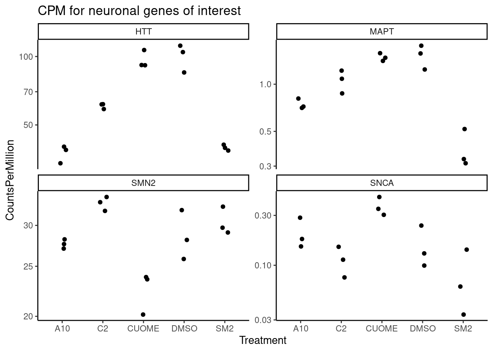
ExpressedGeneCounts <- GeneCounts[mean.cpm>1,]
#Speaman correlation matrix heatmap for CountsPerMillion expression
ExpressedGeneCounts %>%
cpm(log=T) %>%
cor(method="pearson") %>%
heatmap.2(trace="none")Samples sequenced to similar depths, plenty of reads per sample. High correlation as expected for RNA-seq (Pearson R > 0.9) Samples cluster as expected, based on correlation of gene expression (CountsPerMillion). That is, each treatment clusters with its other replicates, and CUOME clusters closest to DMSO.
And now the differential testing results:
DE.results <- read_tsv("../code/DE_testing/Results.txt.gz") %>%
separate(Geneid, into=c("EnsemblID", "GeneSymbol"), sep = "_")Parsed with column specification:
cols(
treatment = col_character(),
Geneid = col_character(),
logFC = col_double(),
logCPM = col_double(),
F = col_double(),
PValue = col_double(),
FDR = col_double()
)head(DE.results)# A tibble: 6 x 8
treatment EnsemblID GeneSymbol logFC logCPM F PValue FDR
<chr> <chr> <chr> <dbl> <dbl> <dbl> <dbl> <dbl>
1 C2 ENSG0000010240… ARMCX3 -4.16 5.72 5292. 3.15e-23 4.23e-19
2 C2 ENSG0000013841… IDH1 -4.42 6.77 5056. 4.70e-23 4.23e-19
3 C2 ENSG0000011586… DARS1 -3.49 5.91 4866. 6.56e-23 4.23e-19
4 C2 ENSG0000011541… STAT1 -3.97 9.91 4356. 1.73e-22 8.37e-19
5 C2 ENSG0000017988… PDXDC1 -3.49 5.18 3866. 4.91e-22 1.90e-18
6 C2 ENSG0000019823… DDX42 -2.64 5.72 2774. 8.91e-21 2.87e-17#Total number tests
DE.results %>%
drop_na() %>%
count(treatment)# A tibble: 4 x 2
treatment n
<chr> <int>
1 A10 19354
2 C2 19354
3 CUOME 19354
4 SM2 19354DE.results %>% pull(treatment) %>% unique()[1] "C2" "CUOME" "SM2" "A10" DE.results %>%
select(treatment, GeneSymbol, logFC, logCPM, PValue, FDR) %>%
filter(GeneSymbol %in% GenesOfInterest)# A tibble: 24 x 6
treatment GeneSymbol logFC logCPM PValue FDR
<chr> <chr> <dbl> <dbl> <dbl> <dbl>
1 C2 GALC -1.81 3.81 1.09e-14 1.66e-12
2 C2 HTT -0.728 6.07 1.14e- 7 1.19e- 6
3 C2 FOXM1 -0.153 7.01 1.01e- 2 2.45e- 2
4 C2 SMN2 0.208 4.83 1.41e- 2 3.27e- 2
5 C2 MAPT -0.517 0.0804 1.72e- 2 3.90e- 2
6 C2 SNCA -0.483 -2.27 3.72e- 1 4.88e- 1
7 CUOME GALC -0.655 3.81 5.89e- 8 1.63e- 6
8 CUOME SMN2 -0.347 4.83 2.90e- 4 1.85e- 3
9 CUOME SNCA 1.20 -2.27 2.20e- 2 6.24e- 2
10 CUOME FOXM1 -0.0871 7.01 1.19e- 1 2.32e- 1
# … with 14 more rowsDE.results %>%
mutate(Label = case_when(
GeneSymbol %in% GenesOfInterest ~ paste(GeneSymbol, format.pval(PValue
, digits=2)),
TRUE ~ NA_character_)) %>%
mutate(`FDR<0.01`=FDR<0.01) %>%
ggplot(aes(x=logFC, y=-log10(PValue), color=`FDR<0.01`, label=Label)) +
geom_point(alpha=0.2) +
geom_label_repel(segment.color = 'black', min.segment.length = 0, size=3) +
facet_wrap(~treatment) +
theme_classic() +
ggtitle("Differential expression volcano") +
labs(caption="Genes of interest labelled with nominal P")
DE.results %>%
mutate(Label = case_when(
GeneSymbol %in% GenesOfInterest ~ paste(GeneSymbol, format.pval(PValue
, digits=2)),
TRUE ~ NA_character_)) %>%
mutate(`FDR<0.01`=FDR<0.01) %>%
arrange(desc(Label)) %>%
ggplot(aes(y=logFC, x=logCPM, color=`FDR<0.01`, label=Label)) +
geom_point(alpha=0.2) +
geom_label_repel(segment.color = 'black', min.segment.length = 0, size=3) +
facet_wrap(~treatment) +
theme_classic() +
ggtitle("Differential expression MA-plot") +
labs(caption="Genes of interest labelled with nominal P")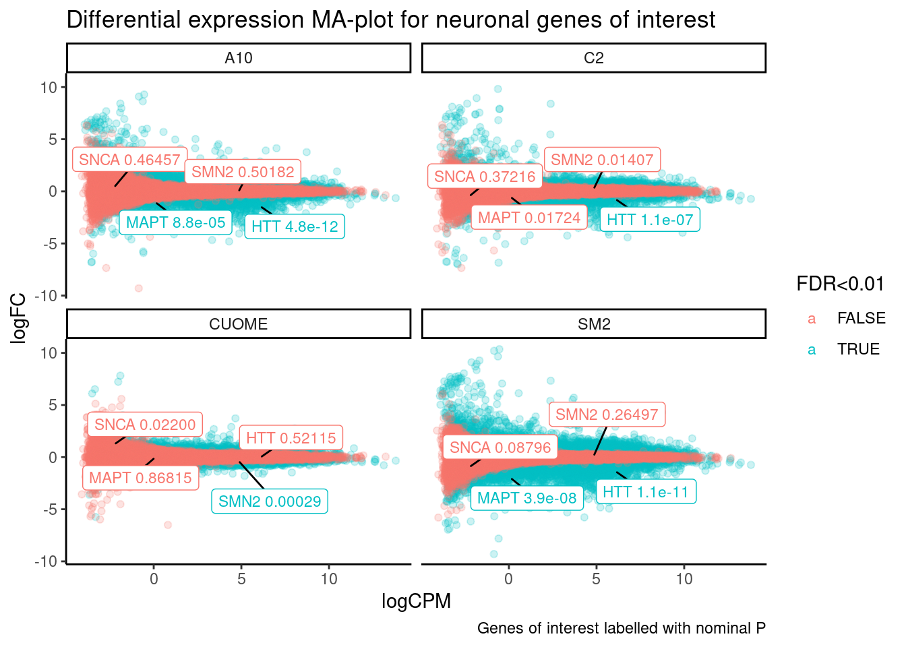
#Number significant tests
DE.results %>%
select(treatment, FDR, logFC) %>%
mutate(
FDR_0.10 = FDR< 0.1,
FDR_0.05 = FDR< 0.05,
FDR_0.01 = FDR< 0.01,
FCGreaterThan2 = abs(logFC) > 1
) %>%
gather(key="FDR", value = "TestResults", FDR_0.10, FDR_0.05, FDR_0.01) %>%
mutate(FDR=recode(FDR, FDR_0.01="FDR<0.01", FDR_0.05="FDR<0.05", FDR_0.10="FDR<0.10")) %>%
group_by(FDR, treatment, FCGreaterThan2) %>%
summarise(NumDiscoveries=sum(TestResults)) %>%
ungroup() %>%
mutate(FCGreaterThan2=if_else(FCGreaterThan2, "FoldChange > 2", "FoldChange < 2")) %>%
ggplot(aes(x=treatment, y=NumDiscoveries, fill=FDR)) +
geom_col(position="dodge") +
facet_wrap(~FCGreaterThan2) +
theme_bw() +
ggtitle("Number differential expression discoveries")Note the colors on these plots are for FDR, taking into account multiple test problem. See table of Pvalues for results for these specific genes Jingxin is interested in… The C2 treatment somewhat downregulates MAPT (P=0.039, log2FC=-0.517). SM2 very strongly downregulates MAPT (P=2.2E-7, logFC=-1.97)
Let’s also plot the pairwise logFC of expression:
Limits = 5
upper_point <- function(data, mapping, ...) {
ggplot(data = data, mapping = mapping, ...) +
geom_point(..., alpha=0.01) +
scale_y_continuous(limits = c(-Limits, Limits)) +
scale_x_continuous(limits = c(-Limits, Limits)) +
geom_abline() +
geom_text_repel(aes(label=Label), color='red', segment.color = 'red', min.segment.length = 0, size=3, max.overlaps=20) +
theme_bw()
}
diag_limitrange <- function(data, mapping, ...) {
ggplot(data = data, mapping = mapping, ...) +
geom_density(...) +
coord_cartesian(xlim=c(-Limits,Limits)) +
theme_bw()
}
DE.results %>%
mutate(Label = case_when(
GeneSymbol %in% GenesOfInterest ~ GeneSymbol,
TRUE ~ NA_character_)) %>%
select(Label, treatment, logFC, EnsemblID) %>%
# group_by(treatment) %>%
# mutate(rn = row_number()) %>%
# ungroup() %>%
pivot_wider(id_cols = c("EnsemblID", "Label"), names_from = "treatment" , values_from = "logFC") %>%
tidyr::unnest() %>%
arrange(Label) %>%
mutate(color=if_else(is.na(Label), "black", "red")) %>%
mutate(alpha=if_else(is.na(Label), 0.01, 1)) %>%
ggpairs(
title="treatment pair expression logFC and Spearman coef",
columns = 3:6,
upper=list(continuous = wrap("cor", method = "spearman", hjust=0.7)),
lower=list(continuous = upper_point),
diag=list(continuous = diag_limitrange))Ok, so based on differential expression, SM2 and A10 are quite similar (correlation coefficient of logFC = 0.802).
Now I will move onto the splicing analyses…
Differential splicing analysis
Basic quality control and differntial splicing test results
First, an overview of the data from a splicing perspective by looking at the leafcutter splice junction count table.
counts <- read.table("../code/SplicingAnalysis/leafcutter/clustering/autosomes/leafcutter_perind_numers.counts.gz", sep = ' ', header=T) %>%
rownames_to_column("intron") %>%
gather(key="Sample", value="Count", -intron)
head(counts) intron Sample Count
1 chr1:17055:17233:clu_1_- A10.1 92
2 chr1:17055:17606:clu_1_- A10.1 8
3 chr1:17055:17915:clu_1_- A10.1 10
4 chr1:17368:17606:clu_1_- A10.1 50
5 chr1:17742:17915:clu_1_- A10.1 68
6 chr1:18061:18268:clu_2_- A10.1 43First, let’s check evenness of junction coverage across samples. Sum total splice junction counts.
counts %>%
group_by(Sample) %>%
summarise(TotalJunctionCounts = sum(Count)) %>%
ggplot(aes(x=Sample, y=TotalJunctionCounts)) +
geom_col() +
theme_classic() +
theme(axis.text.x = element_text(angle = 90, vjust = 0.5, hjust=1)) +
ggtitle("Splice junction read counts per sample")All samples are reasonbly well matched by this metric. Now let’s check how samples cluster looking at sperman correlation coefficient of intron excision ratios
PSI.table <- counts %>%
mutate(Cluster = str_replace(intron, ".+:(.+)$", "\\1")) %>%
group_by(Sample, Cluster) %>%
mutate(ClusterSum = sum(Count)) %>%
mutate(PSI = Count/ClusterSum * 100) %>%
ungroup()
PSI.table %>%
select(intron, Sample, PSI) %>%
spread(key = Sample, value = PSI) %>%
column_to_rownames("intron") %>%
drop_na() %>%
cor(method="spearman") %>%
heatmap.2(trace="none")Conditions cluster together, except for a smaple of CUOME and DMSO which is expected as I was told we expect CUOME to not have much effect on splicing, similar to DMSO control. Good. Now let’s read in the leafcutter differential splicing results.
cluster_sig_files <- list.files("../code/SplicingAnalysis/leafcutter/differential_splicing", "*_cluster_significance.txt", full.names = T)
effect_sizes_files <- list.files("../code/SplicingAnalysis/leafcutter/differential_splicing", "*_effect_sizes.txt", full.names = T)
treatments <- str_replace(cluster_sig_files, ".+/(.+?)_cluster_significance.txt", "\\1")
cluster.sig <- map(cluster_sig_files, read_tsv) %>%
set_names(cluster_sig_files) %>%
bind_rows(.id="f") %>%
mutate(treatment = str_replace(f, ".+/(.+?)_cluster_significance.txt", "\\1")) %>%
select(-f)Parsed with column specification:
cols(
status = col_character(),
loglr = col_double(),
df = col_double(),
p = col_double(),
cluster = col_character(),
p.adjust = col_double()
)
Parsed with column specification:
cols(
status = col_character(),
loglr = col_double(),
df = col_double(),
p = col_double(),
cluster = col_character(),
p.adjust = col_double()
)
Parsed with column specification:
cols(
status = col_character(),
loglr = col_double(),
df = col_double(),
p = col_double(),
cluster = col_character(),
p.adjust = col_double()
)
Parsed with column specification:
cols(
status = col_character(),
loglr = col_double(),
df = col_double(),
p = col_double(),
cluster = col_character(),
p.adjust = col_double()
)effect_sizes <- map(effect_sizes_files, read_tsv) %>%
set_names(effect_sizes_files) %>%
bind_rows(.id="f") %>%
mutate(treatment = str_replace(f, ".+/(.+?)_effect_sizes.txt", "\\1")) %>%
select(-f) %>%
unite("psi_treatment", treatments, sep=" ", na.rm=T) %>%
mutate(psi_treatment = as.numeric(psi_treatment),
cluster = str_replace(intron, "(.+?:).+:(.+?)", "\\1\\2"))Parsed with column specification:
cols(
intron = col_character(),
logef = col_double(),
A10 = col_double(),
DMSO = col_double(),
deltapsi = col_double()
)Parsed with column specification:
cols(
intron = col_character(),
logef = col_double(),
C2 = col_double(),
DMSO = col_double(),
deltapsi = col_double()
)Parsed with column specification:
cols(
intron = col_character(),
logef = col_double(),
CUOME = col_double(),
DMSO = col_double(),
deltapsi = col_double()
)Parsed with column specification:
cols(
intron = col_character(),
logef = col_double(),
SM2 = col_double(),
DMSO = col_double(),
deltapsi = col_double()
)Note: Using an external vector in selections is ambiguous.
ℹ Use `all_of(treatments)` instead of `treatments` to silence this message.
ℹ See <https://tidyselect.r-lib.org/reference/faq-external-vector.html>.
This message is displayed once per session.head(effect_sizes)# A tibble: 6 x 7
intron logef psi_treatment DMSO deltapsi treatment cluster
<chr> <dbl> <dbl> <dbl> <dbl> <chr> <chr>
1 chr1:17055:17… 0.354 0.337 0.379 0.0414 A10 chr1:clu…
2 chr1:17055:17… 0.0208 0.0359 0.0289 -0.00700 A10 chr1:clu…
3 chr1:17055:17… -0.774 0.0266 0.00966 -0.0169 A10 chr1:clu…
4 chr1:17368:17… 0.126 0.276 0.247 -0.0293 A10 chr1:clu…
5 chr1:17742:17… 0.274 0.324 0.336 0.0118 A10 chr1:clu…
6 chr1:3635074:… -0.141 0.556 0.499 -0.0573 A10 chr1:clu…Oops, manually inspecting the effect size signs looks like they are all reversed. Usually I think of deltapsi as treatment - control. Here it is the opposite. Let’s flip the sign. then combine the effect sizes table with the cluster significance and plot some results
effect_sizes <- effect_sizes %>%
mutate(deltapsi = deltapsi*-1,
logef = logef *-1)
#Combine effect sizes and significance for all samples into single df
leafcutter.ds <- effect_sizes %>%
left_join(cluster.sig, by=c("treatment", "cluster"))Plot distribution of how many introns per cluster
leafcutter.ds %>%
count(treatment, cluster) %>%
ggplot(aes(x=n)) +
stat_ecdf() +
coord_cartesian(xlim=c(0,5)) +
facet_wrap(~treatment) +
ylab("ecdf") +
theme_bw() +
ggtitle("Distribution of number introns per leafcutter cluster")Ok so the median number of introns per cluster is 3…
Now, let’s plot some results of the differential splicing tests…
# Plot histogram of P-values
leafcutter.ds %>%
distinct(treatment, cluster, .keep_all=T) %>%
ggplot(aes(x=p)) +
geom_histogram() +
facet_wrap(~treatment) +
theme_bw() +
ggtitle("differential splicing test P-value histograms")`stat_bin()` using `bins = 30`. Pick better value with `binwidth`.#Make volcano plot of deltaPSI (max within cluster) and signifance
leafcutter.ds %>%
group_by(treatment, cluster) %>%
filter(abs(deltapsi) == max(abs(deltapsi))) %>%
ungroup() %>%
ggplot(aes(x=deltapsi, y=-log10(p.adjust), color=p.adjust<0.01)) +
geom_point(alpha=0.05) +
xlab("max effect size within cluster\nDeltaPSI") +
facet_wrap(~treatment) +
theme_bw() +
ggtitle("Differential splicing volcano")Ok, clearly there are many significant results, at a range of effect sizes. As expected, the CUOME sample has the least signficantly differentially spliced clusters. With so many points its hard to really see how many significant clusters there are. Let’s plot this a different way.
#Number of tests
leafcutter.ds %>%
distinct(treatment, cluster) %>%
ggplot(aes(x=treatment)) +
ylab("total differential splicing tests") +
geom_bar() +
theme_bw() +
ggtitle("Number differential splicing tests per treatment") +
labs(caption = "Each leafcutter cluster of introns comprises a single test")#Number of significant tests
leafcutter.ds %>%
select(treatment, cluster, deltapsi, p.adjust) %>%
group_by(treatment, cluster) %>%
filter(abs(deltapsi) == max(abs(deltapsi))) %>%
ungroup() %>%
mutate(
FDR_0.10 = p.adjust< 0.1,
FDR_0.05 = p.adjust< 0.05,
FDR_0.01 = p.adjust< 0.01,
deltapsi_0.1 = abs(deltapsi) > 0.1
) %>%
gather(key="FDR", value = "TestResults", FDR_0.10, FDR_0.05, FDR_0.01) %>%
mutate(FDR=recode(FDR, FDR_0.01="FDR<0.01", FDR_0.05="FDR<0.05", FDR_0.10="FDR<0.10")) %>%
group_by(FDR, deltapsi_0.1, treatment) %>%
summarise(NumDiscoveries=sum(TestResults)) %>%
ungroup() %>%
mutate(deltapsi_0.1=if_else(deltapsi_0.1, "deltaPSI > 0.1", "deltaPSI < 0.1")) %>%
ggplot(aes(x=treatment, y=NumDiscoveries, fill=FDR)) +
geom_col(position="dodge") +
facet_wrap(~deltapsi_0.1) +
theme_bw() +
ggtitle("Number differential splicing discoveries")Ok, so we still get over 1000 significant clusters for the three main treatments even if we restrict to FDR<0.01 and deltapsi > 10%.
Yang was curious about this plot and increasing the resolution of the PSI effect size groups (instead of just <0.1 an >0.1)… Let’s plot that. Same plot as above but faceting by different PSI ranges.
leafcutter.ds %>%
select(treatment, cluster, deltapsi, p.adjust) %>%
group_by(treatment, cluster) %>%
filter(abs(deltapsi) == max(abs(deltapsi))) %>%
ungroup() %>%
mutate(
FDR_0.10 = p.adjust< 0.1,
FDR_0.05 = p.adjust< 0.05,
FDR_0.01 = p.adjust< 0.01,
deltapsi_group = cut(abs(deltapsi), breaks=c(0,0.1, 0.2, 0.5, 1))
) %>%
gather(key="FDR", value = "TestResults", FDR_0.10, FDR_0.05, FDR_0.01) %>%
mutate(FDR=recode(FDR, FDR_0.01="FDR<0.01", FDR_0.05="FDR<0.05", FDR_0.10="FDR<0.10")) %>%
group_by(FDR, deltapsi_group, treatment) %>%
summarise(NumDiscoveries=sum(TestResults)) %>%
ungroup() %>%
ggplot(aes(x=treatment, y=NumDiscoveries, fill=FDR)) +
geom_col(position="dodge") +
facet_wrap(~deltapsi_group) +
theme_bw() +
ggtitle("Number differential splicing discoveries")Ok, that is an important way to visualize the significant results I think. Notably, there are only hundreds to a thousand or so differential splicing results with delta-PSI > 0.2 for A10, C2, and SM2. Virtually no changes of that size for CUOME.
To ask Jingxin:
How were these compunds dosed… Since these are analogs, these may have generally similar effects. If you just upped the dosage of CUOME would you get something like SM2?
What distinguishes the affected introns?
Now let’s try to understand the molecular splicing defect better by looking if there is any meaningful assymetries in splice effect size/direction by alternative splice type (alt 3’ss, alt 5’ss, etc) among introns in significant clusters .
First let’s read in the output of regtools annotate which annotates whether the intron is novel splice donor, splice acceptor, or known… I used the ‘basic’ gencode gtf, which limits transcripts to the ‘basic’ annotated ones and not so many transcripts. I also scored 5’ss and extracted the 5’ss sequence which I want to merge in with the annotations data frame
SpliceTypeAnnotations <- read_tsv("../code/SplicingAnalysis/leafcutter/JuncfilesMerged.annotated.basic.bed.gz") %>%
unite(Intron, chrom, start, end) %>%
distinct(Intron, .keep_all = T) %>%
select(Intron, strand, exons_skipped, anchor, gene_names, gene_ids, splice_site, strand) %>%
mutate(IntronType = recode(anchor, A="Alt 5'ss", D="Alt 3'ss", DA="Annotated", N="New Intron", NDA="New Splice Site combination"))Parsed with column specification:
cols(
chrom = col_character(),
start = col_double(),
end = col_double(),
name = col_character(),
score = col_double(),
strand = col_character(),
splice_site = col_character(),
acceptors_skipped = col_double(),
exons_skipped = col_double(),
donors_skipped = col_double(),
anchor = col_character(),
known_donor = col_double(),
known_acceptor = col_double(),
known_junction = col_double(),
gene_names = col_character(),
gene_ids = col_character(),
transcripts = col_character()
)head(SpliceTypeAnnotations)# A tibble: 6 x 8
Intron strand exons_skipped anchor gene_names gene_ids splice_site
<chr> <chr> <dbl> <chr> <chr> <chr> <chr>
1 chr1_… + 1 DA DDX11L1 ENSG000… GT-AG
2 chr1_… + 6 N <NA> <NA> GT-AG
3 chr1_… - 21 N <NA> <NA> GT-AG
4 chr1_… - 0 N <NA> <NA> GT-AG
5 chr1_… - 0 N <NA> <NA> GT-AG
6 chr1_… - 0 N <NA> <NA> GT-AG
# … with 1 more variable: IntronType <chr>FivePrimeSS <- read_tsv("../code/SplicingAnalysis/leafcutter/JuncfilesMerged.annotated.basic.bed.5ss.tab.gz", col_names = c("Intron", "DonorSeq", "DonorScore")) %>%
mutate(Intron = str_replace(Intron, "(.+)_.+?::.+$", "\\1"))Parsed with column specification:
cols(
Intron = col_character(),
DonorSeq = col_character(),
DonorScore = col_double()
)SpliceTypeAnnotations <- SpliceTypeAnnotations %>%
inner_join(FivePrimeSS, by="Intron")
leafcutter.ds.annotated <- leafcutter.ds %>%
mutate(Intron=str_replace(intron, "(.+?):(.+?):(.+?):.+", "\\1_\\2_\\3")) %>%
inner_join(SpliceTypeAnnotations, by="Intron") %>%
mutate(UpstreamOfDonor2BaseSeq = substr(DonorSeq, 3, 4))
leafcutter.ds.annotated %>%
filter(p.adjust < 0.01) %>%
ggplot(aes(x=deltapsi, fill=treatment)) +
geom_histogram(position="dodge") +
xlab("Effect size\ndeltaPSI") +
facet_wrap(~IntronType, scales="free_y") +
theme_light() +
ggtitle("Distribution of splicing effect sizes") +
labs(caption=str_wrap("Alt 3'ss means 5'ss but not 3'ss in annotation file (Gencode primary transcripts). Alt 5'ss is similar. New intron means neither splice site is in annotation. New splice site combination means both splice sites are annotated but not together", 60))`stat_bin()` using `bins = 30`. Pick better value with `binwidth`.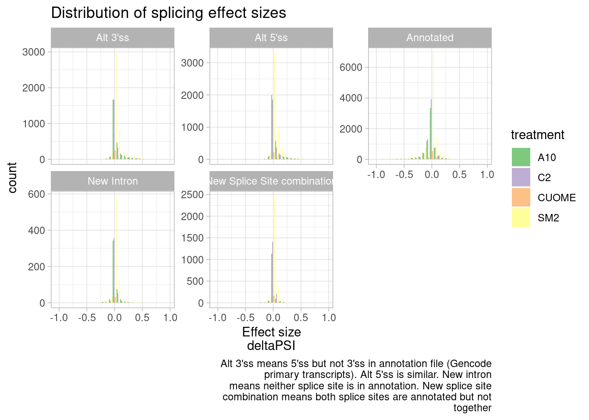
#Same data plotted as ecdf
leafcutter.ds.annotated %>%
filter(p.adjust < 0.01) %>%
ggplot(aes(x=deltapsi, color=treatment)) +
stat_ecdf() +
ylab("CumulativeFraction") +
facet_wrap(~IntronType) +
theme_light() +
ggtitle("Distribution of splicing effect sizes, as ecdf")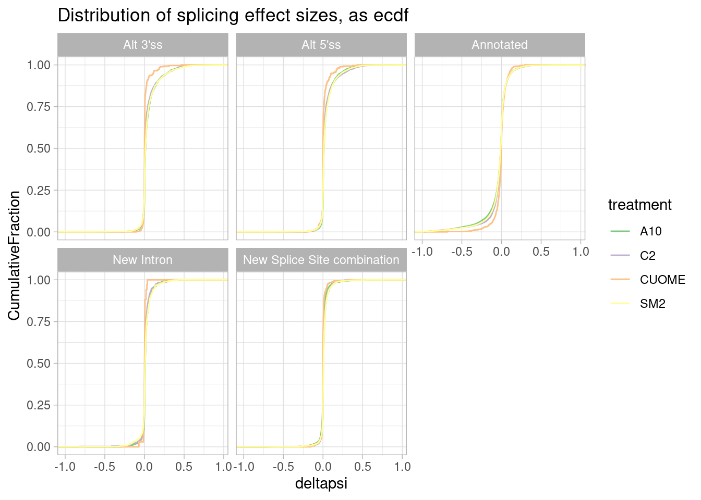
It seems that direction of effects for all types of splice sites are symmetric about 0. In contrast, I have made this plot before for SF3B1 mutants which assymetrically increase alt 3’ss as has been observed by many others.
Maybe this plot makes sense to plot effect sizes and log-ratios of intron excision ratio changes upon treatment, rather than deltapsi. I’m concerned that alternative 3’ss for example, might in general have lower PSI, focusing on deltaPSI might mask strong molecular effects in terms of log-ratio.
leafcutter.ds.annotated %>%
filter(p.adjust < 0.01) %>%
ggplot(aes(x=logef, color=treatment)) +
stat_ecdf() +
coord_cartesian(xlim=c(-2, 2)) +
ylab("CumulativeFraction") +
facet_wrap(~IntronType) +
theme_light() +
ggtitle("Distribution of splicing effect sizes (expressed as log(FoldChange), logef, as ecdf")Okay, actually this way of looking at the data makes more sense I think… The treatments (besides CUOME) generally increase alternative splicing and annotated basic splice sites increase in relative usage.
But let’s also plot the same thing as a histogram just to get a sense of the absolute count of significant detected effects in each class…
leafcutter.ds.annotated %>%
filter(p.adjust < 0.01) %>%
ggplot(aes(x=logef, fill=treatment)) +
geom_histogram(breaks=seq(-2,2,0.2), position="dodge") +
coord_cartesian(xlim=c(-2, 2)) +
ylab("Count") +
facet_grid(rows = vars(IntronType), cols = vars(treatment), scales="free_y") +
theme_light() +
ggtitle("Histogram of splicing effect sizes")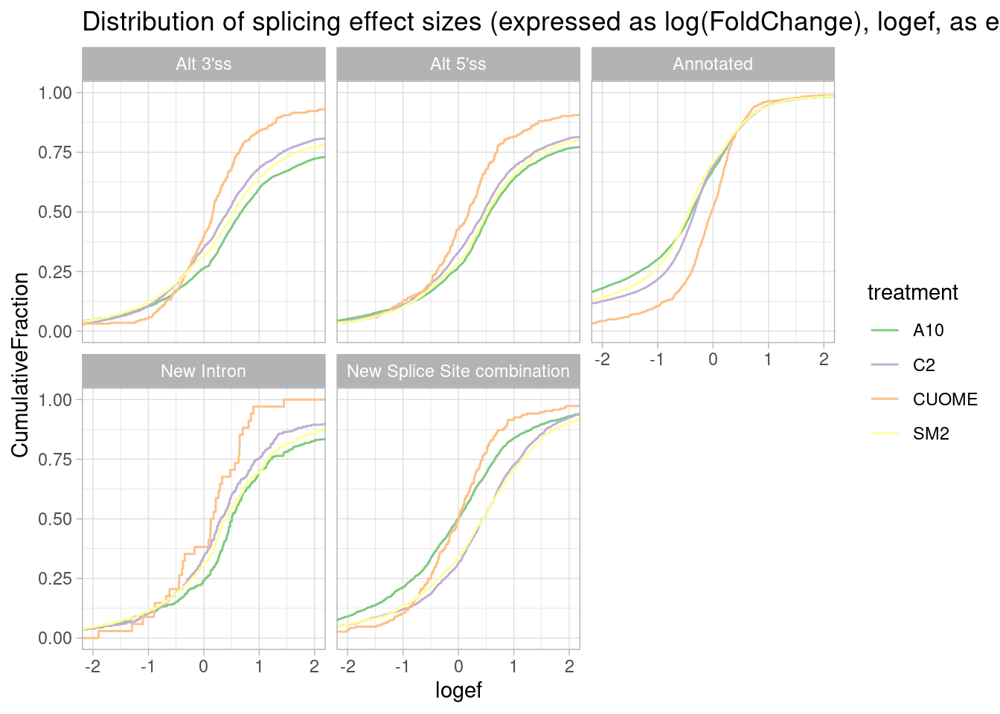
Ok, I can see that there are a similar number of upregulated 3’ss as there are 5’ss.
Let’s go back to the cumulative distribution plots to look at effect size assymetries but for other ‘classes’ of introns based on the canonically (5’ss GT … AG 3’ss) sequence:
leafcutter.ds.annotated %>%
filter(p.adjust < 0.01) %>%
ggplot(aes(x=logef, color=treatment)) +
stat_ecdf() +
coord_cartesian(xlim=c(-2, 2)) +
ylab("CumulativeFraction") +
facet_wrap(~splice_site) +
theme_light() +
ggtitle("Ecdf of sig splicing effect sizes, by 5'ss-3'ss dinucleotides")Nothing particularly notable here, though, there aren’t many non GT-AG introns to begin with so the ecdf is very jaggety.
Let’s make the same plot but for different -2 to 0 positions relative to the splice donor, since risdiplasm (and these analogs) presumably can bind at this region at some splice donors which have a register change like at SMN2.
leafcutter.ds.annotated %>%
filter(p.adjust < 0.01) %>%
ggplot(aes(x=logef, color=treatment)) +
stat_ecdf() +
geom_vline(xintercept = 0, linetype="dashed") +
coord_cartesian(xlim=c(-2, 2)) +
ylab("CumulativeFraction") +
facet_wrap(~UpstreamOfDonor2BaseSeq) +
theme_light() +
ggtitle("Effect sizes for NN|GT introns, grouped by NN") +
labs(caption="Only included introns in FDR<0.01 significant clusters")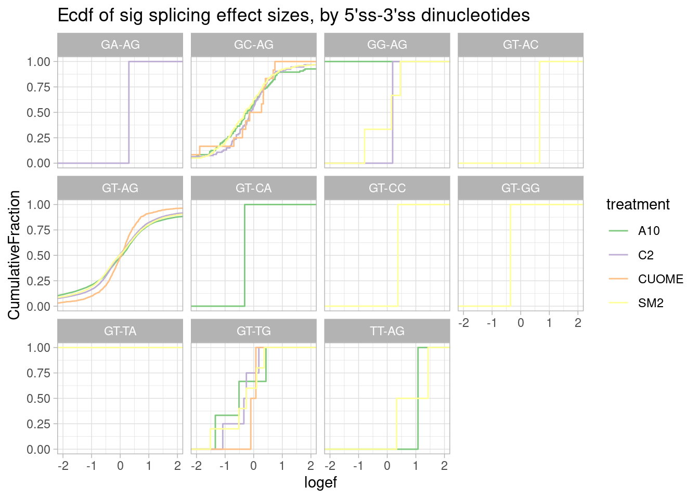
leafcutter.ds.annotated %>%
ggplot(aes(x=logef, color=treatment)) +
stat_ecdf() +
geom_vline(xintercept = 0, linetype="dashed") +
coord_cartesian(xlim=c(-2, 2)) +
ylab("CumulativeFraction") +
facet_wrap(~UpstreamOfDonor2BaseSeq) +
theme_light() +
ggtitle("Effect sizes for NN|GT introns, grouped by NN") +
labs(caption="All introns included")Woah. there is a huge effect for splice sites with GA upstream of 5’ss.
Let’s plot the exact same thing as a histogram, so we can get a sense of the absolute number of events in each of these groups:
leafcutter.ds.annotated %>%
filter(p.adjust < 0.01) %>%
ggplot(aes(x=logef, fill=treatment)) +
geom_histogram(breaks=seq(-2,2,0.2)) +
geom_vline(xintercept = 0, linetype="dashed") +
coord_cartesian(xlim=c(-2, 2)) +
ylab("Number Signif Introns") +
facet_wrap(~UpstreamOfDonor2BaseSeq) +
theme_light() +
ggtitle("Effect sizes for NN|GT introns, grouped by NN") +
labs(caption="Only included introns in FDR<0.01 significant clusters")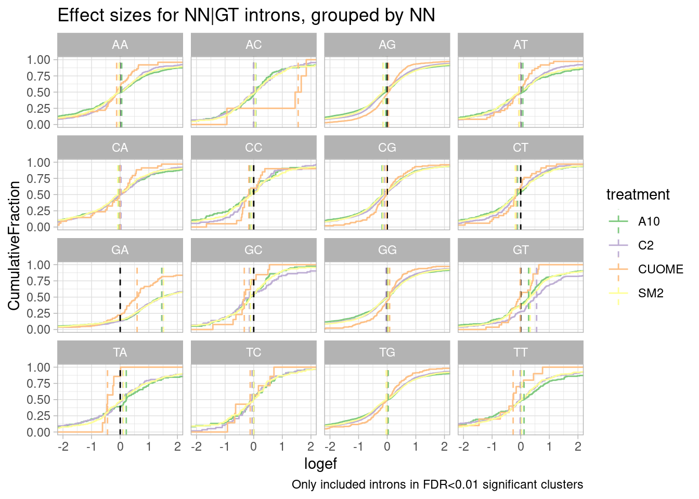
Ok, so even though GA effects are clearly strong, most significant effects, and in fact, even most signficant effects in the positive direction are not from GA|GT splice sites, since AG|GT is just more common.
I wonder if this is partly due to the fact GA|GT will be in intron clusters with non GA|GT introns which will naturally have significant effects on cluster-based intron excision ratio. Let’s investigate that, to get a better sense of what proportion of significant changes can be attributed in to a primary effect (on a GA|GT intron).
For this I will plot the P-value histograms of clusters containing GA|GT versus that do not.
leafcutter.ds.annotated %>%
group_by(cluster, treatment, p) %>%
summarise(GA_in_cluster = ifelse(any("GA" %in% UpstreamOfDonor2BaseSeq), "GA|GT in cluster", "GA|GT not in cluster")) %>%
ggplot(aes(x=p)) +
geom_histogram() +
facet_grid(rows=vars(treatment), cols = vars(GA_in_cluster)) +
theme_light() +
ggtitle("P values for clusters, grouped by whether they contain GA|GT intron")`stat_bin()` using `bins = 30`. Pick better value with `binwidth`.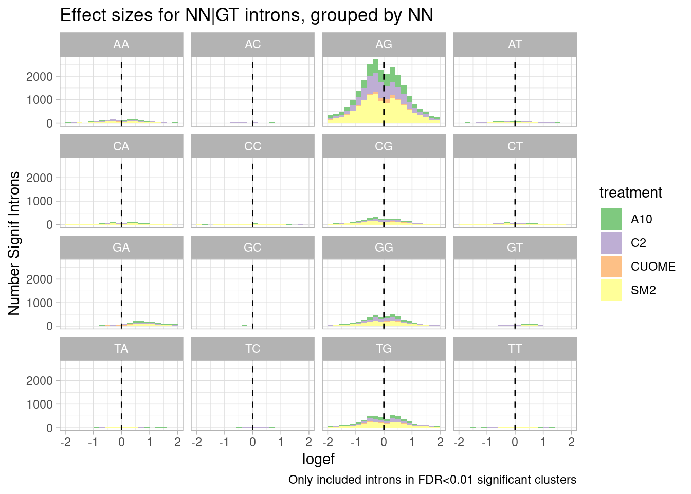
Ok, it appears that even in SM2, most of the significant changes are in intron clusters that don’t have an GA|GT intron. Also of note, nearly all clusters with a GA|GT intron have a significant change.
Another way to look at this would be to look at effect size. leafcutter is quite sensitive such that even small delta-psi splicing changes may have cery low P-values. So perhaps a lot of the small P-values in the non GA|GT clusters represent relatively small effect sizes
Let’s plot the histogram of effect sizes for GA|GT versus non GA|GT containing clusters… Trying to ask: “What fraction of large effect sizes singificant changes are for GA|GT containing clusters”
leafcutter.ds.annotated %>%
group_by(cluster, treatment, p.adjust) %>%
mutate(GA_in_cluster = ifelse(any("GA" %in% UpstreamOfDonor2BaseSeq), "GA|GT in cluster", "GA|GT not in cluster")) %>%
filter(abs(logef) == max(abs(logef))) %>%
filter(p.adjust < 0.01) %>%
ggplot(aes(x=logef, fill=GA_in_cluster)) +
geom_histogram(breaks=seq(-5,5,0.2)) +
coord_cartesian(xlim=c(-5, 5)) +
ylab("Number Signif Introns") +
xlab("max(logef) in cluster") +
# facet_grid(rows=vars(treatment), cols = vars(GA_in_cluster), scales = "free_y") +
# facet_grid(cols = vars(GA_in_cluster), scales = "free_y") +
facet_grid(rows = vars(treatment), cols = , scales = "free_y") +
ggtitle("GA|GT introns only start explain most splicing changes at large effect sizes")
Ok, so even if you consider only the max effect in each cluster (as a way of removing redundant non-positive effect sizes of non GA|GT introns in GA|GT-containing clusters), non GA|GT clusters still make up the large majority of large effects. That is to say, I believe there are more large-effect (possibly indirect) splicing effects than direct effects on GA|GT. I suppose many of the splicing effects on non-GA|GT introns could still be direct, for example, by promoting snRNA:5’ss duplex pairing at other bulged nucleotides besides the -1A position. This paper and this review, fig1 has a nice figure of other snRNA:5’ss pairings with bulged nucleotides that might be worth exploring at some point… However, the GA|GT effect is so strong that I will continue to focus on that class of introns to learn more…
Note that in the above plot, I plotted the max(logef in cluster) and it is not always positive, as I expect for actual GA|GT introns. What is going on. One hypothesis is that a lot of the Alt 5’ss GA|GT introns are paired with a similarly effect alt 3’ss to create a new cassette exon which is also upregulated. Let’s look at the GA|GT-containing clusters and plot the effects, colored by type of splice site.
leafcutter.ds.annotated %>%
group_by(cluster, treatment, p.adjust) %>%
mutate(GA_in_cluster = ifelse(any("GA" %in% UpstreamOfDonor2BaseSeq), "GA|GT in cluster", "GA|GT not in cluster")) %>%
filter(abs(logef) == max(abs(logef))) %>%
filter(p.adjust < 0.01) %>%
filter(GA_in_cluster == "GA|GT in cluster") %>%
ggplot(aes(x=logef, fill=IntronType)) +
geom_histogram(breaks=seq(-5,5,0.2)) +
coord_cartesian(xlim=c(-5, 5)) +
ylab("Number Signif Introns") +
xlab("max(logef) in cluster") +
# facet_grid(rows=vars(treatment), cols = vars(GA_in_cluster), scales = "free_y") +
# facet_grid(cols = vars(GA_in_cluster), scales = "free_y") +
facet_wrap(~treatment, scales = "free_y") +
theme_light() +
ggtitle("Alt 5'ss might be a part of cryptic exon activation")Ok, I see that the max effect for GA|GT introns is almost just as common to be alt 3’ss, suggesting cryptic exon activation is common mode. And that comes at the expense of downregulation of annotated introns. Maybe a simpler way to plot the same idea is to plot the distribution or median affect size all types of introns in GA|GT containing clusters:
leafcutter.ds.annotated %>%
group_by(cluster, treatment, p.adjust) %>%
mutate(GA_in_cluster = ifelse(any("GA" %in% UpstreamOfDonor2BaseSeq), "GA|GT in cluster", "GA|GT not in cluster")) %>%
ungroup() %>%
filter(GA_in_cluster=="GA|GT in cluster") %>%
group_by(treatment, IntronType) %>%
summarise(MedianEffect = median(deltapsi)) %>%
ggplot(aes(x=IntronType, fill=IntronType, y=MedianEffect)) +
geom_col() +
facet_wrap(~treatment) +
theme_bw() +
theme(axis.title.x=element_blank(),
axis.text.x=element_blank(),
axis.ticks.x=element_blank()) +
ggtitle("Alt 5'ss might be a part of cryptic exon activation") +
labs(caption="GA|GT intron clusters have similar median effect of alt 3'ss, consistent with cryptic exon")leafcutter.ds.annotated %>%
group_by(cluster, treatment, p.adjust) %>%
mutate(GA_in_cluster = ifelse(any("GA" %in% UpstreamOfDonor2BaseSeq), "GA|GT in cluster", "GA|GT not in cluster")) %>%
ungroup() %>%
filter(GA_in_cluster=="GA|GT in cluster") %>%
ggplot(aes(x=IntronType, fill=IntronType, y=deltapsi)) +
geom_violin() +
coord_cartesian(ylim=c(-0.1, 0.1)) +
facet_wrap(~treatment) +
theme_bw() +
theme(axis.title.x=element_blank(),
axis.text.x=element_blank(),
axis.ticks.x=element_blank()) +
ggtitle("Alt 5'ss might be a part of cryptic exon activation") +
labs(caption="GA|GT intron clusters have similar median effect of alt 3'ss, consistent with cryptic exon")
Ok, So I feel confident now that what usually happens is that when there is a cluster with a GA|GT intron, it gets increased as an alt 5’ss, concominant with an increase in alt 3’ss to create a new exon, and sometimes a new intron comes too… and all this happens at the expense of annotated introns.
Now let’s look at more than jus the GA|GT. For example, filtering for GA|GT, let’s make the same plot for the two nucleotides upstream (NNGA|GT)
leafcutter.ds.annotated %>%
filter(p.adjust < 0.01) %>%
filter(UpstreamOfDonor2BaseSeq == "GA") %>%
mutate(UpstreamOfGAGT = substr(DonorSeq, 1, 2)) %>%
ggplot(aes(x=logef, color=treatment)) +
stat_ecdf() +
geom_vline(xintercept = 0, linetype="dashed") +
ggtitle("Effect sizes for NNGA|GT introns, grouped by NN") +
coord_cartesian(xlim=c(-8, 8)) +
ylab("CumulativeFraction") +
facet_wrap(~UpstreamOfGAGT) +
theme_light() +
labs(caption="Only FDR<0.01 GA|GT introns included")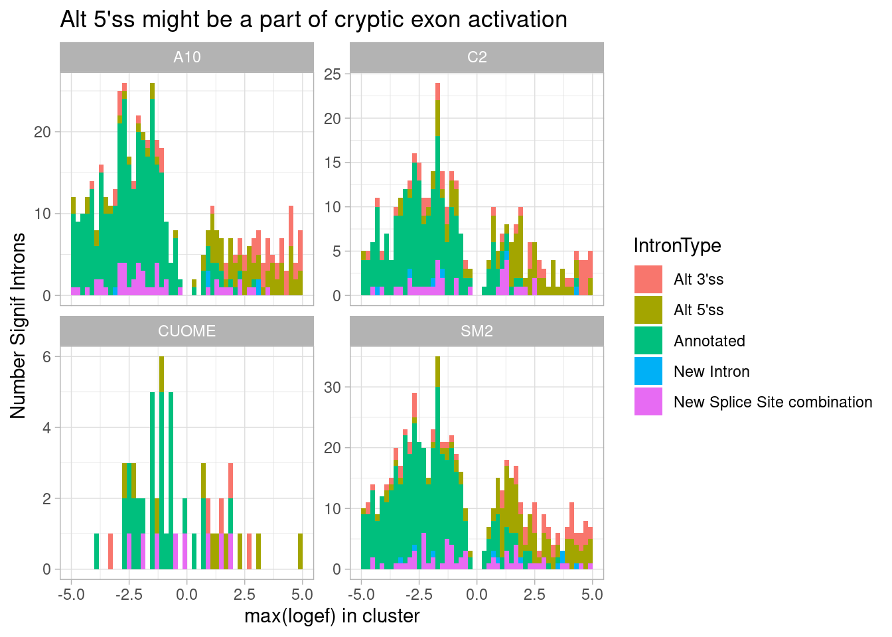
leafcutter.ds.annotated %>%
filter(UpstreamOfDonor2BaseSeq == "GA") %>%
mutate(UpstreamOfGAGT = substr(DonorSeq, 1, 2)) %>%
ggplot(aes(x=logef, color=treatment)) +
stat_ecdf() +
geom_vline(xintercept = 0, linetype="dashed") +
ggtitle("Effect sizes for NNGA|GT introns, grouped by NN") +
coord_cartesian(xlim=c(-4, 4)) +
ylab("CumulativeFraction") +
facet_wrap(~UpstreamOfGAGT) +
theme_light() +
labs(caption="All GA|GT introns included")leafcutter.ds.annotated %>%
filter(p.adjust < 0.01) %>%
filter(UpstreamOfDonor2BaseSeq == "GA") %>%
mutate(UpstreamOfGAGT = substr(DonorSeq, 1, 2)) %>%
ggplot(aes(x=logef, color=treatment)) +
geom_histogram(breaks=seq(-8,8,0.2)) +
geom_vline(xintercept = 0, linetype="dashed") +
ggtitle("Effect sizes for NNGA|GT introns, grouped by NN") +
coord_cartesian(xlim=c(-8, 8)) +
ylab("Number Signif Introns") +
facet_wrap(~UpstreamOfGAGT) +
theme_light() +
labs(caption="Only FDR<0.01 GA|GT introns included")I made some of these plots with filtering for only significant introns, and others including all introns. I think all introns might be the less biased way to do this analysis, to avoid winners curse effects.
Ok, perhaps for all the drugs except for CUOME, AGGA|GT might be the most effected sequence… Note that we are looking into exonic sequences. There could be confounding factors from coding restraints. For example, nucleotides that are more likely to introduce stop codons might have weaker measured effects due to NMD dampening. Let’s approach this motif analysis a bit differently, maybe with MEME suite tools or something. I’ll get to that later…
Let’s also check if affected GA|GT introns tend to be weaker in terms of the other part of the motif. I have scored 5’ss based on PWM (log-odds ratio). This log-odds ratio is formally defined as the log ratio of the probability of seeing the sequence in a 5’ss versus background (where background is uniform nucleotide probabilities):
\(log_2(\frac{Pr(Motif)}{Pr(Background)})\)
and the resulting PWM can also be used to create this weblogo:
PWM
Let’s investigate how drug effects on GA|GT 5’ss introns is correlated with motif score. But first, to get some intuitions on this motif score, let’s plot the distribution for each class of splice sites annotations. I expect a weaker score generally for cryptic 5’ss.
SpliceTypeAnnotations %>%
ggplot(aes(x=DonorScore, color=IntronType)) +
stat_ecdf() +
ylab("CumulativeFraction") +
coord_cartesian(xlim=c(2,12)) +
theme_classic() +
ggtitle("Alt 5'ss gnerally have weaker 5'ss motifs")Ok, it looks like the score typically ranges from 5-10 or so, and unannotated 5’ss introns (and “New introns” which by definition have both an unannotated 5’ss and unannoted 3’ss) have weaker scores. Similarly, let’s plot the distribution of scores for GA|GT versus non GA|GT introns. We could techincally just look up the effect of this from the PWM, but let’s plot the calculated distributoin of scores anyway…
SpliceTypeAnnotations %>%
mutate(UpstreamOfDonor2BaseSeq = substr(DonorSeq, 3, 4)) %>%
mutate(IsGAGTIntron = ifelse(UpstreamOfDonor2BaseSeq == "GA", "GA|GT", "!GAGT")) %>%
ggplot(aes(x=DonorScore, color=IsGAGTIntron)) +
stat_ecdf() +
ylab("CumulativeFraction") +
coord_cartesian(xlim=c(2,12)) +
theme_classic() +
ggtitle("GA|GT introns cause weaker 5'ss motif score")Ok, that makes sense, GA|GT is a pretty weak 5’ss motif to begin with (best is AG|GT)…
Now let’s see if the more “affected” GA|GT introns by the treatments tend to have weaker scores.
Here I am plotting the effect size estimate of ALL GA|GT 5’ss introns as a function of log-odds 5’ss score. I negative correlation would make sense with the hypothesis that weak 5’ss will be more affected.
leafcutter.ds.annotated %>%
filter(UpstreamOfDonor2BaseSeq == "GA") %>%
# filter(IntronType == "Alt 5'ss") %>%
mutate(NominallySignificant = p<0.05) %>%
ggplot(aes(x=DonorScore, y=logef, color=NominallySignificant, group=treatment)) +
geom_point(alpha=0.3) +
geom_smooth(method="lm") +
geom_hline(yintercept = 0, linetype="dashed") +
facet_wrap(~treatment) +
coord_cartesian(xlim=c(2,12), ylim=c(-6,6)) +
theme_classic() +
ggtitle("Stronger 5'ss are less affected by treatment")`geom_smooth()` using formula 'y ~ x'Ok, there is definitely some negative correlation, except for maybe in CUOME. I decided to color points by if the splicing event is nominally significant, which nearly all points are in this set of GA|GT introns. The correlation is quite weak, and even otherwise very strong GA|GT splice sites are affected. That is, this trend doesn’t explain much of the variance. Let’s also plot the same thing but for different classes of introns.
leafcutter.ds.annotated %>%
filter(UpstreamOfDonor2BaseSeq == "GA") %>%
mutate(NominallySignificant = p<0.05) %>%
ggplot(aes(x=DonorScore, y=logef, color=IntronType)) +
geom_point(alpha=0.3) +
geom_smooth(method="lm") +
geom_hline(yintercept = 0, linetype="dashed") +
facet_wrap(~treatment) +
coord_cartesian(xlim=c(2,12), ylim=c(-6,6)) +
theme_classic() +
ggtitle("5'ss score x logef effect interaction with intron type")`geom_smooth()` using formula 'y ~ x'
Ok, there is a downward trend for “new splice site combination”, and “annotated”, and there isn’t so much a downward trend for alt 5’ss, though the effect sizes for those are so obviously positive. A summarised interpretation of this:
- Treatment nearly always increases crpytic GA|GT 5’SS, which tend to already have a weak splice site.
- Annotated 5’ss GA|GT tend to also increase in splicing, especially if they are otherwise weak 5’ splice sites, such that sometimes new splice sites combinations (eg exon skipping) can arise.
Now let’s more carefully explore the differences between the drug treatments.
How do the treatments affect splicing differently
So far, it seems CUOME still has a direct GA|GT splicing effect but just much weaker than SM2, and the other drugs are somewhere in between. I wonder to what extent the splicing changes are more or less identical as assessed by the order of the drugs ranked by effect on any given GA|GT splice site. Let’s randomly sample some introns and plot to explore… I’ll plot both the logef and the deltapsi since i’m not sure what metric makes more sense for this analysis…
sample_n_of <- function(data, size, ...) {
dots <- quos(...)
group_ids <- data %>%
group_by(!!! dots) %>%
group_indices()
sampled_groups <- sample(unique(group_ids), size)
data %>%
filter(group_ids %in% sampled_groups)
}
set.seed(0)
leafcutter.ds.annotated %>%
filter(UpstreamOfDonor2BaseSeq == "GA") %>%
group_by(intron) %>%
mutate(IsSigInAny = any(p.adjust < 0.01)) %>%
ungroup() %>%
filter(IsSigInAny) %>%
add_count(intron) %>%
filter(n==4) %>%
sample_n_of(10, intron) %>%
gather(key="EffectSizeMetric", value="EffectSize", logef, deltapsi) %>%
ggplot(aes(x=treatment, y=EffectSize, color=EffectSizeMetric)) +
geom_point() +
ylab("splicing logef") +
xlab("treatments, randomly selected significant GA|GT introns") +
facet_wrap(~intron + EffectSizeMetric, scales = "free_y", ncol=4) +
theme_classic() +
theme(axis.text.x = element_text(angle = 90, vjust = 0.5, hjust=1)) +
ggtitle("Are there common rank-order patterns of treatment effects?")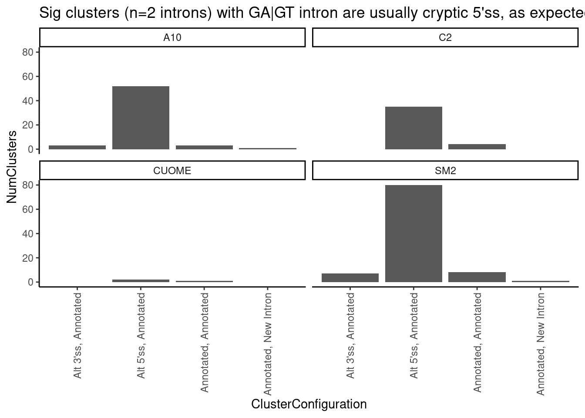
Ok a couple of clear patterns emerge. For example, there are quite a few introns where effect of SM2>C2>A10>CUOME, or something roughly like that. And sometimes the patterns look a bit different whether you consider deltapsi or logef. Let’s make sure I understand exactly what the logef output by leafcutter is… I thought it would be \(log_2\frac{PSI_{treatment}}{PSI_{DMSO}}\) . To make sure, let’s plot the logef calculated from the expression above (from the leafcutter PSI and deltapsi output values), versus the leafcutter logef value:
leafcutter.ds.annotated %>%
mutate(logef_calculated_from_psi = log2(psi_treatment/DMSO)) %>%
ggplot(aes(x=logef, y= logef_calculated_from_psi)) +
xlim(c(-6,6)) +
ylim(c(-6,6)) +
# geom_hex(bins=100) +
geom_point(alpha=0.1) +
coord_cartesian(xlim=c(-6, 6), ylim=c(-6, 6)) +
theme_classic() +
ggtitle("Verification that leafcutter deltapsi is related to logef") +
labs(caption="Read markdown text above and below for description")Ok, yes, I think that expression is correct, though there is likely rounding errors and other reasons they won’t exactly match… But in general I think the logef and deltapsi values from leafcutter are related in the way that matches my understanding.
In any case, I’ll continue to plot the effects both ways for this analysis of differences in treatment effects.
It will be useful to look at more than 10 introns simultaneously. I think maybe a useful way to look at the data will be to standardize the effects with intron, the plot many lines overlayed. Notably, here I only filtered for introns that are significant (p.adjust<0.01) in at least one condition, meaning some of these effect sizes are from non-significant changes in any particular treatment and the effect size estimates may be really noisy. I can consider filtering for effects that are significant in all treatments later, as a way to focus on the more robust measurements.
leafcutter.ds.annotated %>%
filter(UpstreamOfDonor2BaseSeq == "GA") %>%
group_by(intron) %>%
mutate(IsSigInAny = any(p.adjust < 0.01)) %>%
ungroup() %>%
filter(IsSigInAny) %>%
add_count(intron) %>%
filter(n==4) %>%
gather(key="EffectSizeMetric", value="EffectSize", logef, deltapsi) %>%
group_by(EffectSizeMetric, intron) %>%
mutate(StandardizedEffect = scale(EffectSize)) %>%
ggplot(aes(x=treatment, y=StandardizedEffect, group=intron)) +
geom_line(alpha=0.1) +
ylab("standardized effect size") +
xlab("treatments, all significant GA|GT introns") +
facet_wrap(~EffectSizeMetric) +
theme_classic() +
theme(axis.text.x = element_text(angle = 90, vjust = 0.5, hjust=1)) +
ggtitle("All scaled significant effects")Woah. interesting plot but hard to look at. There are a lot of different patterns. and the arbitrary ordering of the treatments can draw your eyes to a particular patterns, even if it is not the most important takeaway… For example, my eyes are drawn to the density of lines that go up while passing from CUOME to SM2, whereas maybe I don’t get to directly see the effects between A10 and CUOME. So I certainly need a less arbitrary way of analyzing these patterns. What I eventually think could be a fruitful approach is to cluster introns based on these patterns, and then do motif analysis (eg MEME) to understand why some introns are in a cluster that is more affected by treatment X and least by Y, for example.
I should note that technically this practice of plotting effect sizes after filtering for significance introduces biases in effect size estimates due to winner’s curse effects… I am essentially double dipping the data to do both significance testing and effect size estimation. In practice I don’t know if these winner’s curse effects biases are the same for all treatments, which have different Pvalue distributions and different numbers of FDR significant introns. Perhap’s I should consider only filters by nominal Pvalues, so hopefully the winner’s curse bias isn’t so dependent on Pvalue distribution/FDR estimation.
So to (hopefully) cut down a bit on the density while select the more robust effect size estimates in a less biased manner, let’s replot but filter for introns that are that nominally significant in all treatments.
leafcutter.ds.annotated %>%
filter(UpstreamOfDonor2BaseSeq == "GA") %>%
group_by(intron) %>%
mutate(IsNominallySigAll = all(p < 0.01)) %>%
ungroup() %>%
filter(IsNominallySigAll) %>%
add_count(intron) %>%
filter(n==4) %>%
gather(key="EffectSizeMetric", value="EffectSize", logef, deltapsi) %>%
group_by(EffectSizeMetric, intron) %>%
mutate(StandardizedEffect = scale(EffectSize)) %>%
ggplot(aes(x=treatment, y=StandardizedEffect, group=intron)) +
geom_line(alpha=0.1) +
ylab("standardized effect size") +
xlab("treatments, all significant GA|GT introns") +
facet_wrap(~EffectSizeMetric) +
theme_classic() +
theme(axis.text.x = element_text(angle = 90, vjust = 0.5, hjust=1)) +
labs(caption="All introns nominally significant P<0.01")Ok, I should still consider clustering samples, since it fixes the arbitrary ordering problem. Let’s try a hiearchal clustering first, and visualize the dendrogram. There may be obvious groups from this.
d.deltapsi <- leafcutter.ds.annotated %>%
filter(UpstreamOfDonor2BaseSeq == "GA") %>%
group_by(intron) %>%
mutate(IsNominallySigAll = all(p < 0.01)) %>%
ungroup() %>%
filter(IsNominallySigAll) %>%
add_count(intron) %>%
filter(n==4) %>%
gather(key="EffectSizeMetric", value="EffectSize", logef, deltapsi) %>%
group_by(EffectSizeMetric, intron) %>%
mutate(StandardizedEffect = scale(EffectSize)) %>%
ungroup() %>%
filter(EffectSizeMetric=="deltapsi") %>%
select(StandardizedEffect, intron, treatment) %>%
spread(key = "treatment", value="StandardizedEffect") %>%
dist()
d.logef <- leafcutter.ds.annotated %>%
filter(UpstreamOfDonor2BaseSeq == "GA") %>%
group_by(intron) %>%
mutate(IsNominallySigAll = all(p < 0.01)) %>%
ungroup() %>%
filter(IsNominallySigAll) %>%
add_count(intron) %>%
filter(n==4) %>%
gather(key="EffectSizeMetric", value="EffectSize", logef, deltapsi) %>%
group_by(EffectSizeMetric, intron) %>%
mutate(StandardizedEffect = scale(EffectSize)) %>%
ungroup() %>%
filter(EffectSizeMetric=="logef") %>%
select(StandardizedEffect, intron, treatment) %>%
spread(key = "treatment", value="StandardizedEffect") %>%
dist()
ward <- hclust(d.deltapsi, method="ward.D")
complete <- hclust(d.deltapsi)
plot(ward)plot(complete)I wasn’t sure what was the best way to do the clustering so I tried two methods, and will get some sense of the similarity by grouping the tree into four and looking at the concordance of those
NumGroups <- 4
groups.ward <- cutree(ward, k=NumGroups)
groups.complete <- cutree(complete, k=NumGroups)
data.frame(groups.ward, groups.complete) %>%
ggplot(aes(x=groups.ward, fill=as.factor(groups.complete))) +
geom_bar() +
ggtitle("cluster groupings are sensitive to clustering method")
Ok, so the choice of clustering method does seem to make a bit of a difference, in the sense that if you cut the dendrogram into 4 groups, the resulting groups won’t be quite the same depending on these two clustering methods… Let’s plot the clustering of one of the ways as a heatmap showing the delta psi effect sizes
Let’s see if it makes a difference if I do the same clustering algorithm but compute distance matrix based on deltapsi vs logef:
groups.deltapsi <- hclust(d.deltapsi) %>% cutree(k=NumGroups)
groups.logef <- hclust(d.logef) %>% cutree(k=NumGroups)
data.frame(groups.deltapsi, groups.logef) %>%
ggplot(aes(x=groups.ward, fill=as.factor(groups.complete))) +
geom_bar() +
ggtitle("cluster groupings are sensitive to using deltapsi vs logef")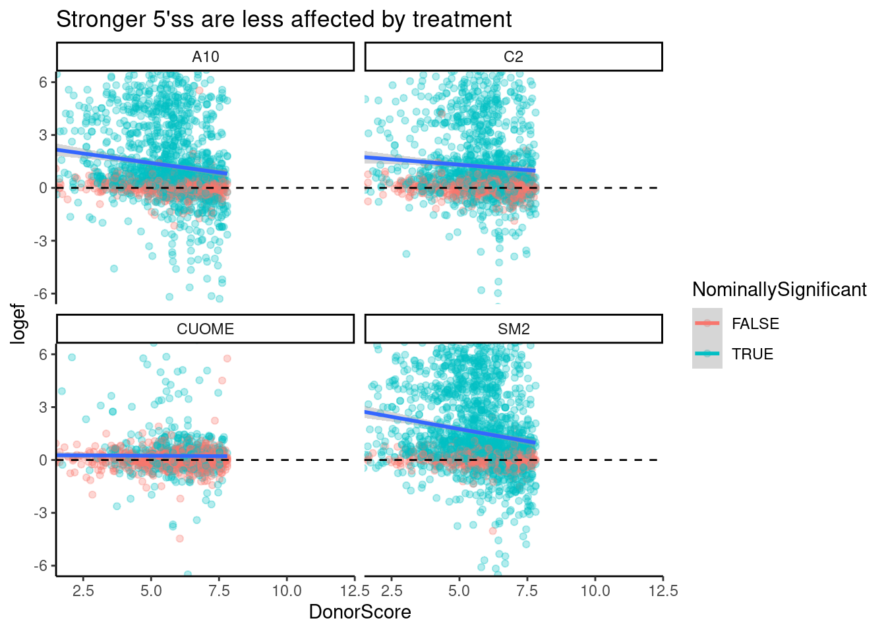
Ok, so even whether I use deltapsi or logef makes the clusters not so robust. basically, how I cluster introns into these groups is very subjective. Let’s try one more thing before giving up on this clustering idea… Let’s try plotting the clustering of samples and introns based on deltapsi from each replicate, for these same set of nominally significant in all GA|GT introns. I think visually seeing the heatmap can be useful, no matter the clustering method.
GAGTIntronsToPlot <- leafcutter.ds.annotated %>%
filter(UpstreamOfDonor2BaseSeq == "GA") %>%
group_by(intron) %>%
mutate(IsNominallySigAll = all(p < 0.01)) %>%
ungroup() %>%
filter(IsNominallySigAll) %>%
add_count(intron) %>%
filter(n==4) %>%
pull(intron) %>% unique()
PSI.table %>%
select(intron, PSI, Sample) %>%
filter(intron %in% GAGTIntronsToPlot) %>%
spread(key="Sample", value="PSI") %>%
mutate(DMSO.Avg = (DMSO.1 + DMSO.2 + DMSO.3)/3) %>%
mutate_at(vars(-intron), funs(. - DMSO.Avg)) %>%
select(-DMSO.Avg) %>%
column_to_rownames("intron") %>%
as.matrix() %>%
heatmap.2(trace="none", col=brewer.pal(11,"Spectral"))PSI.table %>%
select(intron, PSI, Sample) %>%
filter(intron %in% GAGTIntronsToPlot) %>%
spread(key="Sample", value="PSI") %>%
mutate(DMSO.Avg = (DMSO.1 + DMSO.2 + DMSO.3)/3) %>%
mutate_at(vars(-intron), funs(. - DMSO.Avg)) %>%
select(-DMSO.Avg) %>%
column_to_rownames("intron") %>%
as.matrix() %>%
heatmap.2(trace="none", col=brewer.pal(11,"Spectral"), hclustfun = function(x) hclust(x,method = 'ward.D'))PSI.table %>%
select(intron, PSI, Sample) %>%
filter(intron %in% GAGTIntronsToPlot) %>%
spread(key="Sample", value="PSI") %>%
mutate(DMSO.Avg = (DMSO.1 + DMSO.2 + DMSO.3)/3) %>%
mutate_at(vars(-intron), funs(. - DMSO.Avg)) %>%
select(-DMSO.Avg) %>%
column_to_rownames("intron") %>%
as.matrix() %>%
t() %>%
scale(center=F) %>%
t() %>%
heatmap.2(trace="none", col=brewer.pal(11,"Spectral"))
Ok, for the first heatmap plot, each row is an intron, each column is a sample, and the color is where I computed the delta-PSI as \(\Delta PSI = \frac{PSI_{treat}}{mean(PSI_{DMSO})}\). For the second for the second version of the plot, it’s the same thing but with the “Ward” clustering method instead of the default. In the third, it’s the same as the first but I scaled each row before plotting and clustering (divide by standard deviation).
In this way, all the clustering of samples is relatively similar. The clustering of introns I think is not. And it could just be my eyes overinterpreting these clustering, but I feel like perhaps there is a small group of introns that makes C2 look more like SM2 than A10. It would be interesting to compare some of these clustering patterns to the molecular structures.
I will hold off on trying to cluster introns to do motif analysis until later, if ever, since I don’t currently see a robust way to do that.
For now maybe another way to understand similarites and differences in effects between treatments is to visualize a regression between splicing effect sizes between treatments…
First let’s just plot the scatter plot between logef between a pair of treatments for all GA|GT introns measured.
leafcutter.ds.annotated %>%
filter(UpstreamOfDonor2BaseSeq == "GA") %>%
select(intron, logef, treatment) %>%
spread("treatment", "logef") %>%
ggplot(aes(x=A10, y=SM2)) +
geom_point(alpha=0.3) +
coord_cartesian(xlim=c(-6, 6), ylim=c(-6, 6)) +
theme_classic() +
ggtitle("Splicing b/n these treatments are well correlated") +
labs(caption="GA|GT introns only")Wow, that is a striking correlation. And a lot of effects that are very high in SM2 but low in A10 (or vice versa) are likely just due noisy effect size estimates from low junction read counts. In particular, all the points lie roughly along either axis I think are suspiciously likely to be technical artefects from low junction read counts. Let’s plot the same thing for all pairs of treatments, and calculate spearman correlation coefficient:
lower_limitrange_point <- function(data, mapping, ...) {
ggplot(data = data, mapping = mapping, ...) +
geom_point(..., alpha=0.3) +
scale_y_continuous(limits = c(-5, 5)) +
scale_x_continuous(limits = c(-5, 5)) +
geom_abline() +
theme_bw()
}
lower_limitrange_hex <- function(data, mapping, ...) {
ggplot(data = data, mapping = mapping, ...) +
xlim(c(-5,5)) +
ylim(c(-5,5)) +
geom_abline() +
geom_hex(..., bins=50) +
scale_fill_viridis_c(option="C") +
theme_bw()
}
diag_limitrange <- function(data, mapping, ...) {
ggplot(data = data, mapping = mapping, ...) +
geom_density(...) +
coord_cartesian(xlim=c(-5,5)) +
theme_bw()
}
leafcutter.ds.annotated %>%
filter(UpstreamOfDonor2BaseSeq == "GA") %>%
select(intron, logef, treatment) %>%
spread("treatment", "logef") %>%
select(-intron) %>%
ggpairs(
title="Pairwise splicing effect correlation. Only GA|GT introns",
upper=list(continuous = wrap("cor", method = "spearman", hjust=0.7)),
lower=list(continuous = lower_limitrange_hex),
diag=list(continuous = diag_limitrange)
)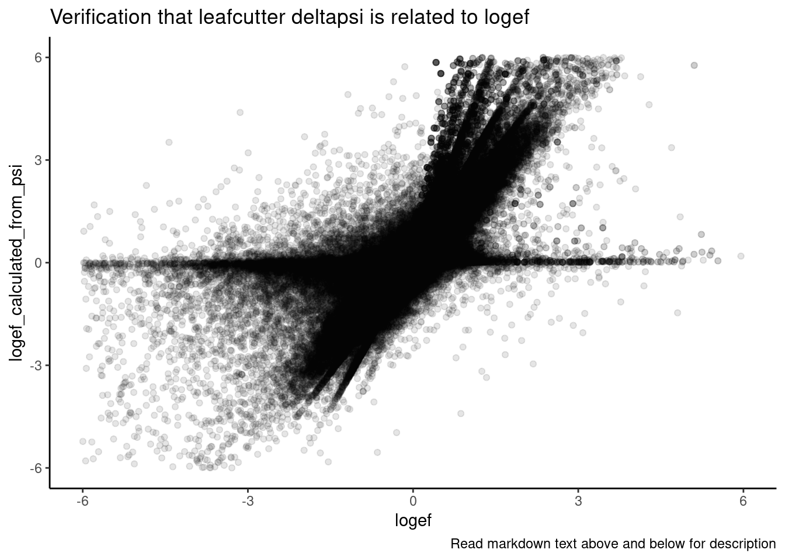
Ok, the spearman correlation between about 0.4 to about 0.85 depending on the pairwise comparison… And some of the lack of correlation is certainly just technical noise… In general I would say these treatments are quite similar. Let’s make the same plot for the “indirect effects”, that is, for introns in clusters without a GA|GT intron:
leafcutter.ds.annotated %>%
group_by(cluster, treatment) %>%
filter(!any("GA" %in% UpstreamOfDonor2BaseSeq)) %>%
ungroup() %>%
select(intron, logef, treatment) %>%
spread("treatment", "logef") %>%
select(-intron) %>%
ggpairs(
title="Pairwise splicing effect correlation. All introns",
upper=list(continuous = wrap("cor", method = "spearman", hjust=0.7)),
lower=list(continuous = lower_limitrange_hex),
diag=list(continuous = diag_limitrange)
)So there is some (more modest) correlation even when considering introns that don’t have a GA|GT intron in the cluster. Let’s revisit the idea that some of these non GA|GT intron splicing effects might be ‘direct’ effects on 5’ss:U1snRNA pairing at a different bulge. For example, I think another candidate sequence to explore besides gA|gt (where A represents a bulged nucleotide from u1 snRNA) would be ag|gtAaagt, since it also contains a bulged adenosine but would otherwise pair perfectly to u1.
Permuted null.
Let’s see if any of introns of these hand-selected candidate sequence were tested for leafcutter effects and if they have a general increase in splicing, as a signature of direct effects. First I will make a plot for the established effect of gA|gtaag introns with a bulged “A”, then I will make some analogous plots for other bulged snRNA:5’ss pairings described in the literature or hypothesized by me.
PlotEffectSizeDistribution <- function(data){
ggplot(data, aes(x=logef, color=treatment)) +
stat_ecdf() +
geom_vline(xintercept = 0, linetype="dashed") +
coord_cartesian(xlim=c(-2, 2)) +
ylab("CumulativeFraction") +
xlab("log2(SplicingFoldChange)") +
facet_wrap(~treatment) +
theme_light() +
theme(legend.position = "none")
}
leafcutter.ds.annotated %>%
filter(str_detect(DonorSeq, "\\w\\wAGGTAAG\\w")) %>%
PlotEffectSizeDistribution +
ggtitle("Effects for nnag|guaagn introns; (optimal u1:5'ss pairing)")leafcutter.ds.annotated %>%
filter(str_detect(DonorSeq, "\\w\\wGAGTAAG\\w")) %>%
PlotEffectSizeDistribution +
ggtitle("Effects for nngA|guaagn introns; (bulged A)")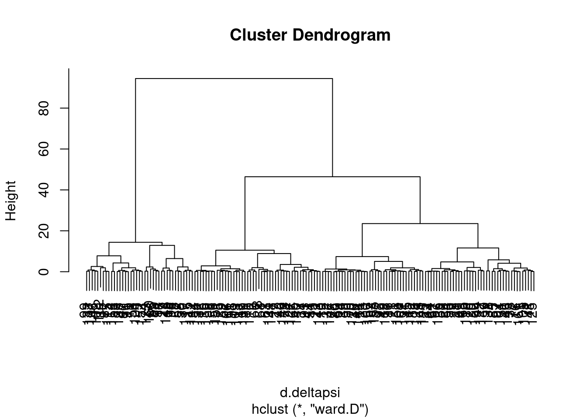
pre-mRNAs with sequence most consistent with bulged base pairing like in my hypothetical example (ag|gtAaagt):
leafcutter.ds.annotated %>%
filter(str_detect(DonorSeq, "\\w\\w\\wGGTAAAGT")) %>%
PlotEffectSizeDistribution +
ggtitle("Effects for nnng|guAaagu introns; (bulged A)")pre-mRNAs with sequence most consistent with shifted base pairing like Fig1C:
leafcutter.ds.annotated %>%
filter(str_detect(DonorSeq, "\\w\\wCAGTTAAG\\w")) %>%
PlotEffectSizeDistribution +
ggtitle("Effects for nnca|guuaagn introns; (shifted register)")pre-mRNAs with sequence most consistent with bulged base pairing like Fig1D:
leafcutter.ds.annotated %>%
filter(str_detect(DonorSeq, "\\w\\w\\wGGTTAAG\\w")) %>%
PlotEffectSizeDistribution +
ggtitle("Effects for nnng|guUaagn introns; (bulge at T)")
Ok interesting. I think maybe there is also an effect for introns with this sequence G|GTTAAG in which the the second U would be bulged. Similar to gA|gt, SM2 has the stronger efect and CUOME the weakest.
Let’s check one more bulged pairing that is also described in the review:
pre-mRNAs with sequence most consistent with bulged base pairing like Fig1E:
leafcutter.ds.annotated %>%
filter(str_detect(DonorSeq, "\\w\\w\\wGGTAGTA\\w")) %>%
PlotEffectSizeDistribution +
ggtitle("Effects for nnng|gua.guan introns; (bulge in snRNA at .)")leafcutter.ds.annotated %>%
filter(str_detect(DonorSeq, "^\\w\\w\\w\\wGTAA\\wGT")) %>%
PlotEffectSizeDistribution +
ggtitle("Effects for nnnn|guaaNgn introns; (bulged N)")So from this crude sequence analysis of handpicked 5’ss sequences: gA|gt has an obvious and strong increase in splicing, and as has been described in the literature it is due to stabilization of the -1A in the snRNA:5’ss duplex. Here I also see a smaller but believable (imo) effect for g|gtTaag where the +3T would be bulged and possibily stabilized by the small molecules… But since T in this case would be bulged and un-paired from u1, maybe other nucleotides (eg A) have a stronger effect if they are at this position. So let’s take this one step furher to look the effect of the N nucleotide in introns that match g|gtNaag:
leafcutter.ds.annotated %>%
filter(str_detect(DonorSeq, "\\w\\w\\wGGT\\wAAG\\w")) %>%
mutate(N = substr(DonorSeq, 7,7)) %>%
ggplot(aes(x=logef, color=treatment)) +
stat_ecdf() +
geom_vline(xintercept = 0, linetype="dashed") +
coord_cartesian(xlim=c(-2, 2)) +
ylab("CumulativeFraction") +
facet_grid(cols = vars(treatment), rows=vars(N)) +
ggtitle("Effects for nnng|guNaagu introns; (bulged N)") +
theme_light() 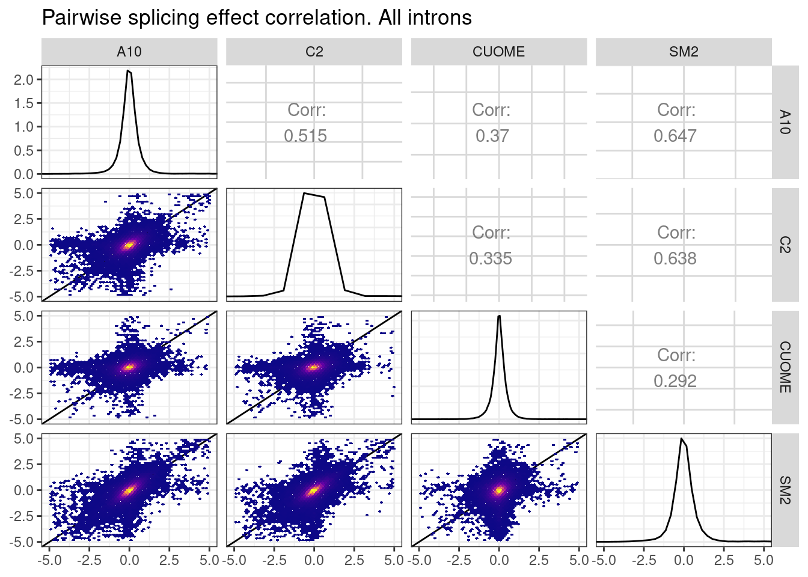
Ok, it seems I really only see that effect for g|gtTaag and not other nucleotides at that position. Let’s summarise all these results about testing specific sequences of introns for assymetrical effects, into a single heatmap.
PlotOut <- leafcutter.ds.annotated %>%
# filter(IntronType == "Alt 5'ss") %>%
select(intron, treatment, logef, DonorSeq) %>%
mutate(
`11_nnng|guUaag` = str_detect(DonorSeq, "^\\w\\w\\wGGTTAAG"),
`2_nngA|gunnnn` = str_detect(DonorSeq, "^\\w\\wGAGT"),
`3_nngA|guaagn` = str_detect(DonorSeq, "^\\w\\wGAGTAAG"),
`4_nagA|guaagn` = str_detect(DonorSeq, "^\\wAGAGTAAG\\w"),
`5_nGgA|guaagn` = str_detect(DonorSeq, "^\\wGGAGTAAG\\w"),
`6_nCgA|guaagn` = str_detect(DonorSeq, "^\\wCGAGTAAG\\w"),
`7_nUgA|guaagn` = str_detect(DonorSeq, "^\\wTGAGTAAG\\w"),
`7.2_nagC|guaagn` = str_detect(DonorSeq, "^\\wGACGTAAG\\w"),
`7.3_nagG|guaagn` = str_detect(DonorSeq, "^\\wGAGGTAAG\\w"),
`8_nngU|guaagn` = str_detect(DonorSeq, "^\\w\\wGTGTAAG"),
`9_nagU|guaagn` = str_detect(DonorSeq, "^\\wAGTGTAAG"),
`1_nnag|guaagn` = str_detect(DonorSeq, "^\\w\\wAGGTAAG\\w"),
`10_nnng|guVaag` = str_detect(DonorSeq, "^\\w\\w\\wGGT[ACG]AAG"),
`9.5_nnnn|guaaHg` = str_detect(DonorSeq, "^\\w\\w\\w\\wGTAA[ACT]G")
) %>%
filter_at(vars(-c("intron", "treatment", "logef", "DonorSeq")), any_vars(. == T)) %>%
gather(key="Pattern", value="IsMatch", -c("intron", "treatment", "logef", "DonorSeq")) %>%
filter(IsMatch) %>%
group_by(Pattern, treatment) %>%
summarise(median = median(logef),
p = wilcox.test(logef, alternative="greater")$p.value,
n = sum(IsMatch)) %>%
ungroup() %>%
separate(Pattern, into = c("PlotOrder", "Pattern"), sep = "_", convert=T) %>%
arrange(PlotOrder) %>%
ggplot(aes(x=reorder(Pattern, desc(PlotOrder)), y=treatment, fill=median)) +
# geom_point(aes(size=-log10(p), color=median)) +
geom_tile() +
geom_text(aes(label=paste0("p=",format.pval(p, digits=2), "\nn=", n) ), size=3) +
# scale_fill_viridis_c(option = "E", limits = c(-1.3, 1.3)) +
# scale_fill_distiller(palette = "Spectral", limits = c(-1.3, 1.3)) +
scale_fill_gradient2(name="Median log2(FoldChange)") +
scale_x_discrete(expand = c(0, 0)) +
scale_y_discrete(expand = c(0, 0)) +
xlab("5'Splice Site Pattern,\npredicted bulges and mismatches capitalized") +
coord_flip() +
theme_classic() +
theme(axis.text.y=element_text(size=16, family="mono")) +
theme(legend.position="bottom") +
ggtitle("Summary heatmap of median effects by 5'ss pattern")
PlotOut
ggsave("../code/scratch/BulgeTests.table.pdf", PlotOut, height=7, width=7)TODO: also check for systematic bulge effects at 3’ss and bp. for example, the consensus bp that perfectly complements u2 snRNA would be CTAAC. What if we had CTAAAC… would those cryptic 3’ss get activated. Or at the 3’ss, would TAAG be preferentially activated
How does differential splicing relate to expression?
Another thing Jingxin suggested plotting is to reproduce something his postdoc noticed: that splicing changes are generally associated with a non-symetrical signal in expression change.
Let’s merge the differential splicing and dfferential expression results by host gene to investigate:
Before merging tables, I am curious how often introns overlap more than one gene, since these would be sort of ambiguous cases on how I should deal with them. How many genes can each intron be attribued to:
SpliceTypeAnnotations %>%
head(10000) %>%
separate_rows(gene_names, sep = ",") %>%
count(Intron) %>%
ggplot(aes(x=n)) +
geom_histogram() +
ggtitle("How many host-genes annotated for each intron")`stat_bin()` using `bins = 30`. Pick better value with `binwidth`.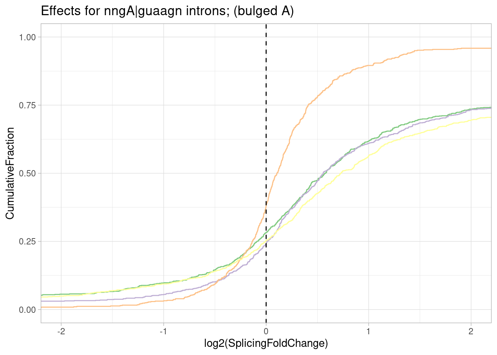
Ok, the vast majority of introns that can be attributed to a gene are attributed to exactly one host gene.
Before merging the results, let’s still filter out introns that can’t be mapped to any gene or that map to more than one host gene… Then let’s plot a scatter plot to see any potential correlation between splicing effects and expression effects. Here I’ll filter for the max-within-intron delta-psi
DatToReproduceSplicingExpressionEffect <- leafcutter.ds.annotated %>%
filter((!is.na(gene_names)) & str_detect(gene_ids, ",", negate=T)) %>%
mutate(gene_ids=str_replace(gene_ids, "\\..+$", "")) %>%
inner_join(
(DE.results %>%
mutate(gene_ids=str_replace(EnsemblID, "\\..+$", ""))),
by=c("treatment","gene_ids"))
# DE.results %>% pull(treatment) %>% unique()
DatToReproduceSplicingExpressionEffect %>%
group_by(treatment, cluster) %>%
filter(abs(deltapsi) == max(abs(deltapsi))) %>%
ungroup() %>%
filter(p.adjust < 0.01) %>%
ggplot(aes(x=deltapsi, y=logFC)) +
geom_point(alpha=0.05) +
facet_wrap(~treatment) +
theme_bw() +
ggtitle("Scatter of host-gene expression change vs splicing change")First of all I clearly see some assymetrical effects in the sense that there are more downregulated genes than up in general.
I think this could replicate what Jingxin’s postdoc, Jungxin Zhao found by plotting volcano plots. Reproducing exactly what he plotted might take a little more work since it requires thinking about exon inclusion/skipping which is a bit different from leafcutter intron-centric measurements… But let’s explore this correlation b/n expression and splicing a bit more… Firstly let’s do the same but filter just for the likely “direct” targets that have GA|GT 5’ splice sites
DatToReproduceSplicingExpressionEffect %>%
mutate(IsGAGTIntron = ifelse(UpstreamOfDonor2BaseSeq == "GA", "GA|GT", "!GAGT")) %>%
mutate(IsSplicingChangeSignificant = ifelse(p.adjust < 0.01, "Sig", "NS")) %>%
mutate(IsSigIsGAGT = paste(IsGAGTIntron, IsSplicingChangeSignificant)) %>%
ggplot(aes(x=deltapsi, y=logFC)) +
geom_point(alpha=0.1) +
geom_smooth(method="lm") +
facet_grid(rows = vars(treatment), cols = vars(IsSigIsGAGT)) +
theme_bw() +
ggtitle("Increase in GA|GT intron-splicing generally with downregulation")`geom_smooth()` using formula 'y ~ x'
Ok, perhaps there is some assymetry here, wherein the GA|GT 5’ splice sites, as plotted above are generally upregulated in splicing, while there host genes are more likely to be downregulated at expression level. Perhaps the model is that the GA splice sites generally induce cryptic splicing that mediates NMD.
Let’s investigate a bit more by plotting whether the introns are annotated vs unannotated (cryptic). Let’s also facet by whether the 5’ss is GA|GT rather than filter for that.
DatToReproduceSplicingExpressionEffect %>%
filter(treatment=="SM2") %>%
mutate(IsSplicingChangeSignificant = ifelse(p.adjust < 0.01, "Sig", "NS")) %>%
ggplot(aes(x=deltapsi, y=logFC)) +
geom_point(alpha=0.3, aes(color=IntronType)) +
geom_hline(yintercept = 0, linetype="dashed") +
geom_vline(xintercept = 0, linetype="dashed") +
ylab("Host gene expression\nlog2(FoldChange)") +
xlab("Splicing change\nDeltaPSI") +
# facet_wrap(~IsSplicingChangeSignificant) +
theme_bw() +
ggtitle("Increase in cryptic splice sites associated with host-gene downregulation")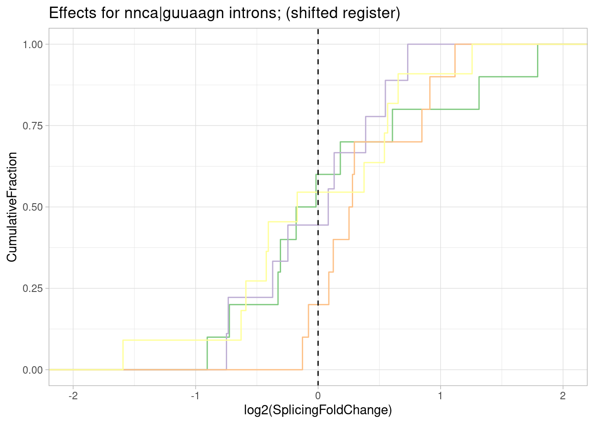
DatToReproduceSplicingExpressionEffect %>%
mutate(IsGAGTIntron = ifelse(UpstreamOfDonor2BaseSeq == "GA", "GA|GT", "!GAGT")) %>%
mutate(IsSplicingChangeSignificant = ifelse(p.adjust < 0.01, "Sig", "NS")) %>%
mutate(IsSigIsGAGT = paste(IsGAGTIntron, IsSplicingChangeSignificant)) %>%
ggplot(aes(x=deltapsi, y=logFC)) +
geom_point(alpha=0.3, aes(color=IntronType)) +
geom_hline(yintercept = 0, linetype="dashed") +
geom_vline(xintercept = 0, linetype="dashed") +
ylab("Host gene expression\nlog2(FoldChange)") +
xlab("Splicing change\nDeltaPSI") +
facet_grid(rows = vars(treatment), cols = vars(IsSigIsGAGT)) +
theme_bw() +
theme(legend.position="bottom") +
ggtitle("Increase in cryptic splice sites associated with host-gene downregulation")I think this plot is pretty consistent with that model about cryptic 5’ss that induce host transcript downregulation, possibly by NMD. Upregulation of cryptic 3’ss also tend to have a host transcript downregulation effect, but the direct effects (those at GA|GT 5’ss) tend to overwhelmingly be activation of cryptic 5’ss.
Let’s consider different ways to present similar information graphically.
let’s try, a volcano plot of DE expression, plotted by significant splice types, just for SM2:
DatToReproduceSplicingExpressionEffect %>%
filter(treatment == "SM2") %>%
mutate(
DE = case_when(
FDR < 0.01 & sign(logFC) == 1 ~ "Up",
FDR < 0.01 & sign(logFC) == -1 ~ "Down",
TRUE ~ "NS"
)
) %>%
ggplot(aes(x=deltapsi, y=-log10(p.adjust), color=DE )) +
geom_point(alpha=0.2) +
facet_wrap(~IntronType) +
theme_classic() +
ggtitle("Increase in cryptic splice sites associated with host-gene downregulation")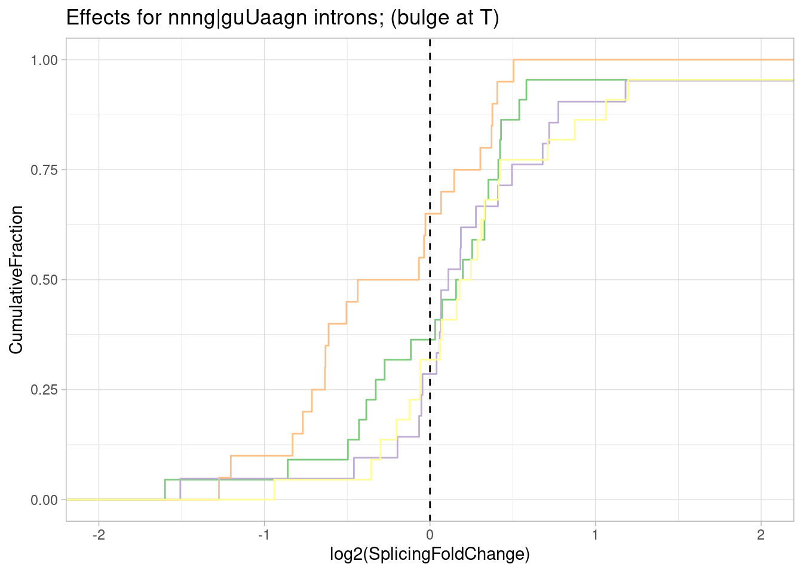
Lastly, let’s try visualizing as stacked bar graphs showing the proportion of up vs down vs not-significant host gene changes upon up/down/NS change in splicing types. I think this is an important way to show the data for the technical detail that cryptic splice sites are just harder to identify decreases for since they are already rare by nature. But if you categorize the cryptic splice sites that you DO see decreases for, and see different host gene changes in that group versus the cryptic splice sites that increase, then I will be more convinced that this isn’t technical detail is the whole explanation.
DatToReproduceSplicingExpressionEffect %>%
filter(treatment == "SM2") %>%
group_by(treatment, cluster) %>%
filter(abs(deltapsi)==max(abs(deltapsi))) %>%
filter(abs(deltapsi) > 0.05) %>%
ungroup() %>%
mutate(
SplicingSign = case_when(
p.adjust < 0.01 & sign(deltapsi) == 1 ~ "SplicingIncrease",
p.adjust < 0.01 & sign(deltapsi) == -1 ~ "SplicingDecrease",
p.adjust > 0.01 ~ "Splicing NS"
),
ExpressionSign = case_when(
FDR < 0.01 & sign(logFC) == 1 ~ "ExpressionIncrease",
FDR < 0.01 & sign(logFC) == -1 ~ "ExpressionDecrease",
FDR > 0.01 ~ "Expression NS"
)
) %>%
count(IntronType, treatment, SplicingSign, ExpressionSign) %>%
mutate(ExpressionSign = fct_relevel(ExpressionSign, "ExpressionIncrease", "Expression NS", "ExpressionDecrease")) %>%
ggplot(aes(
x=SplicingSign,
y=n,
fill=ExpressionSign
)) +
geom_col(position="fill") +
ylab("Fraction") +
facet_wrap(~IntronType) +
scale_x_discrete(name="SplicingChange", limits=c("SplicingDecrease","Splicing NS","SplicingIncrease")) +
scale_fill_brewer(name="HostGeneExpressionChange", limits=c("ExpressionIncrease", "Expression NS", "ExpressionDecrease"), palette = "Spectral") +
theme_classic() +
theme(axis.text.x = element_text(angle = 90, vjust = 0.5, hjust=1)) +
ggtitle("Increase in cryptic splice sites associated with host-gene downregulation")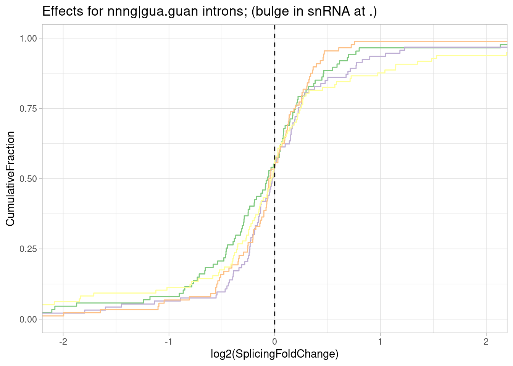
Checking known splice targets from the literature
Next, we can also use these splice site annotations to match significant splicing changes to host genes. Let’s check on the SNCA and MAPT genes Jingxin is interseted in. I’ll also search for GAPDH introns as a positive control to make sure the code works as expected.
SpliceTypeAnnotations %>%
filter(str_detect(gene_names, pattern=GenesOfInterest)) %>%
sample_n(10)# A tibble: 10 x 10
Intron strand exons_skipped anchor gene_names gene_ids splice_site
<chr> <chr> <dbl> <chr> <chr> <chr> <chr>
1 chr4_… + 1 NDA HTT ENSG000… GT-AG
2 chr4_… + 0 DA HTT ENSG000… GT-AG
3 chr5_… + 1 A SNCAIP ENSG000… GT-AG
4 chr4_… + 0 A HTT ENSG000… GT-AG
5 chr12… - 1 NDA FOXM1 ENSG000… GT-AG
6 chr12… - 0 D FOXM1 ENSG000… GT-AG
7 chr12… - 2 A FOXM1 ENSG000… GT-AG
8 chr14… - 0 A GALC ENSG000… GT-AG
9 chr5_… + 1 DA SNCAIP ENSG000… GT-AG
10 chr4_… + 1 NDA HTT ENSG000… GT-AG
# … with 3 more variables: IntronType <chr>, DonorSeq <chr>,
# DonorScore <dbl>SpliceTypeAnnotations %>%
filter(str_detect(gene_names, pattern=GenesOfInterest)) %>%
inner_join(
(
leafcutter.ds %>%
mutate(Intron=str_replace(intron, "(.+?):(.+?):(.+?):.+", "\\1_\\2_\\3"))
), by="Intron")# A tibble: 19 x 22
Intron strand exons_skipped anchor gene_names gene_ids splice_site
<chr> <chr> <dbl> <chr> <chr> <chr> <chr>
1 chr12… - 0 DA FOXM1 ENSG000… GT-AG
2 chr12… - 0 DA FOXM1 ENSG000… GT-AG
3 chr12… - 0 DA FOXM1 ENSG000… GT-AG
4 chr12… - 0 DA FOXM1 ENSG000… GT-AG
5 chr14… - 0 DA GALC ENSG000… GT-AG
6 chr14… - 0 DA GALC ENSG000… GT-AG
7 chr14… - 0 DA GALC ENSG000… GT-AG
8 chr4_… + 0 DA HTT ENSG000… GT-AG
9 chr4_… + 0 DA HTT ENSG000… GT-AG
10 chr4_… + 0 DA HTT ENSG000… GT-AG
11 chr4_… + 0 DA HTT ENSG000… GT-AG
12 chr4_… + 0 DA HTT ENSG000… GT-AG
13 chr4_… + 0 DA HTT ENSG000… GT-AG
14 chr4_… + 0 DA HTT ENSG000… GT-AG
15 chr4_… + 0 DA HTT ENSG000… GT-AG
16 chr5_… + 0 DA SMN2 ENSG000… GT-AG
17 chr5_… + 0 DA SMN2 ENSG000… GT-AG
18 chr5_… + 0 DA SMN2 ENSG000… GT-AG
19 chr5_… + 0 DA SMN2 ENSG000… GT-AG
# … with 15 more variables: IntronType <chr>, DonorSeq <chr>,
# DonorScore <dbl>, intron <chr>, logef <dbl>, psi_treatment <dbl>,
# DMSO <dbl>, deltapsi <dbl>, treatment <chr>, cluster <chr>,
# status <chr>, loglr <dbl>, df <dbl>, p <dbl>, p.adjust <dbl>It appears none of the junctions in SNCA or MAPT genes passed filters for testing. They may have been two lowly expressed to test for leafcutter, and I was fairly permissive already for filtering junctions for differential splicing testing. I think these genes just aren’t well expressed enough to really glean splicing information at these specific genes. If I want to analyze them at all I will have to go back to more raw data before leafcutter testing which does some filtering.
Let’s read in the leafcutter count table and search for these genes:
PSI.table %>%
mutate(Intron=str_replace(intron, "(.+?):(.+?):(.+?):.+", "\\1_\\2_\\3")) %>%
inner_join(SpliceTypeAnnotations, by="Intron") %>%
filter(str_detect(gene_names, pattern=c("SNCA", "MAPT")))# A tibble: 0 x 16
# … with 16 variables: intron <chr>, Sample <chr>, Count <int>,
# Cluster <chr>, ClusterSum <int>, PSI <dbl>, Intron <chr>,
# strand <chr>, exons_skipped <dbl>, anchor <chr>, gene_names <chr>,
# gene_ids <chr>, splice_site <chr>, IntronType <chr>, DonorSeq <chr>,
# DonorScore <dbl>These genes also apparently did not pass default leafcutter clustering parameters. Let’s read in a redo of the splice junction count table with more permissive leafcutter parameters for filtering lowly expressed junctions.
counts.permissive <- read.table("../code/SplicingAnalysis/leafcutter/clustering_permissive/autosomes/leafcutter_perind_numers.counts.gz", sep = ' ', header=T) %>%
rownames_to_column("intron") %>%
gather(key="Sample", value="Count", -intron)
PSI.table.permissive <- counts.permissive %>%
mutate(Cluster = str_replace(intron, ".+:(.+)$", "\\1")) %>%
group_by(Sample, Cluster) %>%
mutate(ClusterSum = sum(Count)) %>%
mutate(PSI = Count/ClusterSum * 100) %>%
ungroup()
PSI.table.permissive %>%
mutate(Intron=str_replace(intron, "(.+?):(.+?):(.+?):.+", "\\1_\\2_\\3")) %>%
inner_join(SpliceTypeAnnotations, by="Intron") %>%
filter(str_detect(gene_names, pattern=c("SNCA", "MAPT"))) %>% head()# A tibble: 6 x 16
intron Sample Count Cluster ClusterSum PSI Intron strand exons_skipped
<chr> <chr> <int> <chr> <int> <dbl> <chr> <chr> <dbl>
1 chr4:… A10.1 3 clu_13… 3 100 chr4_… - 2
2 chr5:… A10.1 0 clu_14… 8 0 chr5_… + 1
3 chr5:… A10.1 5 clu_14… 8 62.5 chr5_… + 1
4 chr5:… A10.1 0 clu_14… 8 0 chr5_… + 0
5 chr5:… A10.1 2 clu_14… 7 28.6 chr5_… + 1
6 chr5:… A10.1 0 clu_14… 7 0 chr5_… + 0
# … with 7 more variables: anchor <chr>, gene_names <chr>, gene_ids <chr>,
# splice_site <chr>, IntronType <chr>, DonorSeq <chr>, DonorScore <dbl>Ok. So now we have some junctions for SNCA and MAPT… Let’s plot admixture plots for all the GA|GT-containing clusters overlapping all the genes of interest:
PSI.table.permissive.genesofinterest <- PSI.table.permissive %>%
mutate(Intron=str_replace(intron, "(.+?):(.+?):(.+?):.+", "\\1_\\2_\\3")) %>%
inner_join(SpliceTypeAnnotations, by="Intron") %>%
mutate(UpstreamOfDonor2BaseSeq = substr(DonorSeq, 3, 4)) %>%
mutate(IsGAGT = UpstreamOfDonor2BaseSeq== "GA") %>%
filter(gene_names %in% c("SNCA", "MAPT")) %>%
group_by(Cluster) %>%
mutate(GA_in_cluster = ifelse(any("GA" %in% UpstreamOfDonor2BaseSeq), "GA|GT in cluster", "GA|GT not in cluster")) %>%
ungroup()
colourCount = length(unique(PSI.table.permissive.genesofinterest$intron))
getPalette = colorRampPalette(brewer.pal(9, "Set1"))
PSI.table.permissive.genesofinterest %>%
mutate(Cluster_label = paste(Cluster, gene_names)) %>%
sample_frac() %>%
ggplot(aes(x=Sample, y=Count, fill=Intron, color=IsGAGT)) +
geom_col() +
facet_wrap(~Cluster_label) +
scale_fill_manual(values = getPalette(colourCount)) +
theme_classic() +
# theme(legend.position="none") +
theme(axis.text.x = element_text(angle = 90, vjust = 0.5, hjust=1))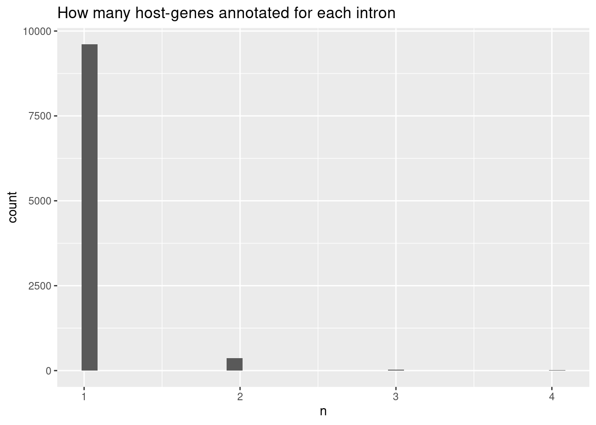
Ok, none of the introns in SNCA or MAPT that we detected are GAGT introns (which I assume the ones that were previously documented in the literature are) so we just can’t measure those splicing of those introns in this dataset, despite that we have differential expression results that are consistent with the literature.
Let’s try looking at GA|GT splicing in the other genes of interest noted in the literature too (eg HTT, etc)…
- I’m going to turn this block off for now… The plotting looks like a mess because there is too many introns being plotted, and I’ll have to manually go thru the literature to find the exact splice sites of interset to focus on for plotting.
PSI.table.permissive.genesofinterest <- PSI.table.permissive %>%
mutate(Intron=str_replace(intron, "(.+?):(.+?):(.+?):.+", "\\1_\\2_\\3")) %>%
inner_join(SpliceTypeAnnotations, by="Intron") %>%
mutate(UpstreamOfDonor2BaseSeq = substr(DonorSeq, 3, 4)) %>%
mutate(IsGAGT = UpstreamOfDonor2BaseSeq== "GA") %>%
filter(gene_names %in% GenesOfInterest) %>%
group_by(Cluster) %>%
mutate(GA_in_cluster = ifelse(any("GA" %in% UpstreamOfDonor2BaseSeq), "GA|GT in cluster", "GA|GT not in cluster")) %>%
ungroup()
colourCount = length(unique(PSI.table.permissive.genesofinterest$intron))
getPalette = colorRampPalette(brewer.pal(9, "Set1"))
PSI.table.permissive.genesofinterest %>%
filter(GA_in_cluster == "GA|GT in cluster") %>%
mutate(Cluster_label = paste(Cluster, gene_names)) %>%
sample_frac() %>%
ggplot(aes(x=Sample, y=PSI, fill=Intron, color=IsGAGT)) +
geom_col() +
facet_wrap(~Cluster_label) +
scale_fill_manual(values = getPalette(colourCount)) +
theme_classic() +
# theme(legend.position="none") +
theme(axis.text.x = element_text(angle = 90, vjust = 0.5, hjust=1))Using ClinVar to prioritize potential therapeutic targets
So finally, I think it will be interesting to look at Pangolin expected splicing changes in response to ClinVar pathogenic mutations, and see if any of these drugs work in counteracting direction across any genes. Much like the Nature communications paper (I forget the authors, I’ll link it later here.). I should note this straightforward thinking of treatment to combat pathogenic splicing changes isn’t the only way these could be used therapeutically. For example, in SMN2, there is a naturally occuring poison exon that can be skipped by treatment, which leads to SMN2 upregulation and partial rescue of pathogenic loss-of-function mutations in SMN1. So in addition to this direct approach of looking at pathogenic splicing mutations to oppose, I should also consider pipeline that uses information about poison exons, and the mode of inheritance of diseases.
In any case, as for the straightforward approach about reversing pathogenic splicing mutations, let’s first read in the ClinVar data with Pangolin splicing effect predictions, which I eventually hope to use to help annotate more potentially clinically relevant splicing events
Explore ClinVar molecular and clinical significant annotations
# table of gwas considered
ClinVar <- read_tsv("../code/scratch/test.txt.gz", col_names = c("Chr", "Pos", "Sig", "Condition", "MolecularSig", "Pangolin", "OMIM")) %>%
separate(MolecularSig, into=c("MolSigCode", "MolSigDescription"), sep="\\|") %>%
separate(Pangolin, into=c("Gene", "GreatestUp", "GreatestDown"), sep="\\|") %>%
separate(GreatestUp, into=c("PangolinRelPosUp", "PangolinChangeUp"), sep=":", convert=T) %>%
separate(GreatestDown, into=c("PangolinRelPosDown", "PangolinChangeDown"), sep=":", convert=T) %>%
mutate(PangolinChangeDown = as.numeric(PangolinChangeDown)) %>%
filter(!is.na(PangolinChangeDown)) %>%
mutate(PangolinAbsPosUp = Pos + PangolinRelPosUp) %>%
mutate(PangolinAbsPosDown = Pos + PangolinRelPosDown)Parsed with column specification:
cols(
Chr = col_double(),
Pos = col_double(),
Sig = col_character(),
Condition = col_character(),
MolecularSig = col_character(),
Pangolin = col_character(),
OMIM = col_character()
)ClinVar %>% pull(MolSigDescription) %>% unique() [1] "intron_variant"
[2] "synonymous_variant"
[3] "missense_variant"
[4] "initiatior_codon_variant"
[5] "frameshift_variant"
[6] "nonsense"
[7] "inframe_deletion"
[8] "inframe_insertion"
[9] "3_prime_UTR_variant"
[10] "non-coding_transcript_variant"
[11] "5_prime_UTR_variant"
[12] "splice_donor_variant"
[13] "splice_acceptor_variant"
[14] "inframe_indel"
[15] "stop_lost"
[16] "genic_upstream_transcript_variant"
[17] "no_sequence_alteration"
[18] "genic_downstream_transcript_variant"MolSigsToLump <- c("inframe_insertion", "non-coding_transcript_variant", "inframe_indel", "genic_downstream_transcript_variant", "5_prime_UTR_variant", "inframe_deletion", "3_prime_UTR_variant", "genic_upstream_transcript_variant" , "no_sequence_alteration", "intron_variant")
MolSigsSplicing <- c("splice_donor_variant", "splice_acceptor_variant")
ClinVar <- ClinVar %>%
mutate(MolSigDescription_simplified = case_when(
MolSigDescription %in% MolSigsToLump ~ "Other small effects",
MolSigDescription %in% MolSigsSplicing ~ "SpliceSiteVariant",
T ~ MolSigDescription
))
ClinVar %>%
count(Sig, MolSigDescription_simplified) %>%
ggplot(aes(x=Sig, y=n, fill=MolSigDescription_simplified)) +
geom_col(pos="stack") +
ylab("Num ClinVar mutations") +
theme_classic() +
theme(axis.text.x = element_text(angle = 90, vjust = 0.5, hjust=1)) +
ggtitle("Pathogenic/LikelyPathogenic variants enriched for SpiceSiteVariants")ClinVar %>%
count(Sig, MolSigDescription_simplified) %>%
ggplot(aes(x=Sig, y=n, fill=MolSigDescription_simplified)) +
geom_col(pos="fill") +
ylab("Fraction ClinVar mutations") +
theme_classic() +
theme(axis.text.x = element_text(angle = 90, vjust = 0.5, hjust=1)) +
ggtitle("Pathogenic/LikelyPathogenic variants enriched for SpiceSiteVariants")Ok that was a peek at the ClinVar database. Eventually I will fold in the Pangolin splicing change predictions on pathogenic or likely pathogenic variants in splice sites, to see if any of the treatments switch splicing in counteracticting directions.
Explore Pangolin splicing effect predictions
As a santiy check that Pangolin results make sense, let’s subset the clinvar mutations annotated as splice site mutations, and check the max predicted Pangolin splicing change effect size.
ClinVar %>%
mutate(SplicingVariant = MolSigDescription %in% MolSigsSplicing) %>%
select(SplicingVariant, PangolinChangeDown, PangolinChangeUp) %>%
gather(key="PangolinDirection", "EffectSize", -SplicingVariant) %>%
mutate(SplicingVariant=if_else(SplicingVariant, "SpliceSiteVariant", "NotSpliceSiteVariant")) %>%
ggplot(aes(x=PangolinDirection, y=EffectSize)) +
geom_violin() +
ylab("Pangolin predicted splicing effect size") +
facet_wrap(~SplicingVariant) +
theme_bw() +
ggtitle("ClinVar SpliceSiteVariant annotations have large predicted splicing effects")Ok, that makes sense. ClinVar splice site variants have much larger Pangolin predicted effects on splicing.
First, I want to be sure I understand what the ClinVar “splice_donor_variant” and “splice_acceptor_variant” codes really mean (is it only variants in the essential GT-AG, or does it extend farther into the intronic motifs?)… I tried looking thru documentation online for this, but couldn’t find a detailed description. So let’s plot the distribution of distances between the max Pangolin effected splice sites and the variant:
ClinVar %>%
filter(MolSigDescription %in% MolSigsSplicing) %>%
select(Pos, PangolinRelPosUp, PangolinRelPosDown, MolSigDescription) %>%
gather(key="PangolinDirection", "RelativeDist", PangolinRelPosUp, PangolinRelPosDown) %>%
group_by(Pos, PangolinDirection, MolSigDescription) %>%
filter(abs(RelativeDist) == min(abs(RelativeDist))) %>%
ungroup() %>%
distinct(.keep_all = T) %>%
ggplot(aes(x=RelativeDist)) +
geom_histogram(breaks=seq(-10,10)) +
coord_cartesian(xlim=c(-10,10)) +
facet_wrap(~PangolinDirection+MolSigDescription) +
theme_classic() +
ggtitle("I think SpliceSiteVariants refers only to GT-AG")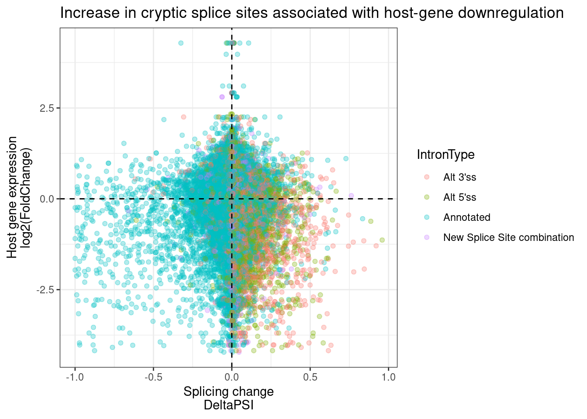
It’s hard to exactly interpret this, especially since I am considering relative position without regard to strand, so there are sort of mirrored effects going on… But since for both “splice_donor_variant” and “splice_acceptor_variant” observations, there is such a strong signal at -2 to -1 I think it is likely that both of those codes refer to just the essential GT and AG 5’ and 3’ splice sites.
So we may also want to consider some of the ClinVar variants with strong Pangolin splicing effects even if they aren’t SpliteSiteVariants. For example, I think that variants coded as “intron_variant” may include important variants at the a splice site motif (besides the essential GT-AG, which would be coded as “splice_donor_variant” and “splice_acceptor_variant”). So first, let’s see how many of these other categories there are, within the pathogenic or likely pathogenic categories that have Pangolin predicted splicing effects…
ClinVar$Sig %>% table().
Affects
96
association
188
Benign
137204
Benign/Likely_benign
19475
confers_sensitivity
2
Conflicting_interpretations_of_pathogenicity
41246
drug_response
1546
Likely_benign
211331
Likely_pathogenic
32730
not_provided
8937
other
835
Pathogenic
69290
Pathogenic/Likely_pathogenic
8277
protective
20
risk_factor
278
Uncertain_significance
317711 PlotTypesOfPathogenicVariantsAndPangolinEffects <- ClinVar %>%
filter(Sig %in% c("Pathogenic", "Pathogenic/Likely_pathogenic", "Likely_pathogenic")) %>%
group_by(Chr, Pos) %>%
mutate(LargestPangolinChange = max(abs(PangolinChangeDown), abs(PangolinChangeUp))) %>%
ungroup() %>%
ggplot(aes(x=LargestPangolinChange, fill=MolSigDescription_simplified)) +
geom_histogram() +
ylab("Number variants") +
theme_bw() +
ggtitle("Some Non 'SpliceSiteVariants' have appreciable predicted splicing effects")
PlotTypesOfPathogenicVariantsAndPangolinEffects`stat_bin()` using `bins = 30`. Pick better value with `binwidth`.## Zooming in...
PlotTypesOfPathogenicVariantsAndPangolinEffects +
coord_cartesian(ylim=c(0, 5000))`stat_bin()` using `bins = 30`. Pick better value with `binwidth`.
PlotTypesOfPathogenicVariantsAndPangolinEffects +
coord_cartesian(ylim=c(0, 5000))`stat_bin()` using `bins = 30`. Pick better value with `binwidth`.It seems that pangolin does identify some “Pathogenic” or “Likely pathogenic” variants with potentially meaningful predicted splicing effects (say >0.25) that are not SpliceSiteVariants… But splice site variants seems to capture most of these large effects.
Here I’ll plot the types of molecular changes for likely pathogenic SNPs with Pangolin changes > 0.1, as the ClinVar variants to consider merging with leafcutter results…
ClinVar %>%
filter(Sig %in% c("Pathogenic", "Pathogenic/Likely_pathogenic", "Likely_pathogenic")) %>%
group_by(Chr, Pos) %>%
mutate(LargestPangolinChange = max(abs(PangolinChangeDown), abs(PangolinChangeUp))) %>%
ungroup() %>%
filter(LargestPangolinChange > 0.1) %>%
ggplot(aes(x=MolSigDescription)) +
geom_bar() +
ylab("Number variants") +
theme_bw() +
theme(axis.text.x = element_text(angle = 90, vjust = 0.5, hjust=1)) +
ggtitle("Number variants with PredictedSplicingChange > 0.1")Hmmm, some of these variants that Pangolin likely picks up on are definitely not directly splicing related and not good candidates for reversal by drug treatment. For example, frameshift mutations. So I’ll keep all the variants that have Pangolin changes > 1 AND are not in some of those categories:
MolecularCategoriesToInclude <- c("splice_acceptor_variant", "splice_donor_variant", "synonymous_variant", "intron_variant", "missense_variant")
SigCategoriesToInclude <- c("Pathogenic", "Pathogenic/Likely_pathogenic", "Likely_pathogenic")
ClinVar %>%
filter(Sig %in% SigCategoriesToInclude) %>%
group_by(Chr, Pos) %>%
mutate(LargestPangolinChange = max(abs(PangolinChangeDown), abs(PangolinChangeUp))) %>%
ungroup() %>%
filter(LargestPangolinChange > 0.1) %>%
filter(MolSigDescription %in% MolecularCategoriesToInclude) %>%
ggplot(aes(x=LargestPangolinChange, fill=MolSigDescription)) +
geom_histogram() +
ylab("Number variants") +
theme_bw() +
ggtitle("Variants including to merge with diffSplicing results")`stat_bin()` using `bins = 30`. Pick better value with `binwidth`.Prioritize splicing-pathogenic introns that might be counteracted by treatment
Ok, now that I’ve decided what ClinVar variants to consider merging with the differential splicing (and possibly expression) results… I will merge the differential splicing results with ClinVar. I’ll plot the Pangolin effect on splicing for a pathogenic condition associated variant as a black dot, and add the treatment’s measured in vitro effect on the same splice site for splice site changes that are significant by leafcutter. I expect there to be so many results that I’ll just randomly select a smaller number for visual presentation.
Some notes and filters for exactly how I do this:
- ClinVar variants with Pangolin predicted splicing change <0.1 \(\Delta PSI\) (PSI refers to a specific splice site) were excluded.
- Only ClinVar variants annotated in the following molecular categories were included: splice_acceptor_variant, splice_donor_variant, synonymous_variant, intron_variant, missense_variant
- Only ClinVar variants annotated in the following clinical significance categories were included: Pathogenic, Pathogenic/Likely_pathogenic, Likely_pathogenic
- Pangolin splicing effects of a mutation are reported as the two splice sites with the greatest up and greatest down change. Here I considered only the splice site with the greater absolute value Pangolin effect, then to estimate the effect of the drug treatment on the same splice site, I summed up the deltapsi for all introns that contain that splice site
- After estimateing the treatment effect on the Pangolin most effected splice site, to prioritize the most likely direct effects, only splice sites that are in a cluster with GA|GT were considered, and with nominal p<0.01 (not using FDR/p.adjust because it is likely overly conservative, since genomewide FDR estimation uses higher proportion of more negative tests from non GA|GT introns)
- In the data frame table that I construct, for each (splice site):(treatment):(condition) trio that passes the above filters, in the same row I report DE results for the host gene and leafcutter results for the GA|GT intron with the largest deltapsi (which doesn’t necessarily have to contain the same exact splice site as the Pangolin effect; it need only be in the same cluster).
ClinVar %>% pull(Sig) %>% unique() [1] "Uncertain_significance"
[2] "Likely_benign"
[3] "Benign"
[4] "Likely_pathogenic"
[5] "Pathogenic"
[6] "Affects"
[7] "Conflicting_interpretations_of_pathogenicity"
[8] "Benign/Likely_benign"
[9] "not_provided"
[10] "Pathogenic/Likely_pathogenic"
[11] "risk_factor"
[12] "association"
[13] "other"
[14] "drug_response"
[15] "protective"
[16] "confers_sensitivity" ClinVar %>%
count(Chr, Pos, Gene, Condition) %>%
arrange(desc(n))# A tibble: 820,677 x 5
Chr Pos Gene Condition n
<dbl> <dbl> <chr> <chr> <int>
1 15 4.34e7 ENSG000001… ['not_provided'] 19
2 3 3.70e7 ENSG000000… ['Hereditary_nonpolyposis_colorectal_n… 17
3 3 2.56e7 ENSG000000… ['not_provided'] 13
4 11 2.88e6 ENSG000001… ['Beckwith-Wiedemann_syndrome'] 12
5 14 9.51e7 ENSG000001… ['DICER1-related_pleuropulmonary_blast… 11
6 18 5.11e7 ENSG000001… ['Myhre_syndrome|Hereditary_hemorrhagi… 10
7 2 1.65e8 ENSG000001… ['Seizures', '_benign_familial_infanti… 9
8 2 2.06e8 ENSG000000… ['not_provided'] 9
9 11 9.44e7 ENSG000000… ['Ataxia-telangiectasia-like_disorder_… 9
10 17 1.81e7 ENSG000000… ['not_provided'] 9
# … with 820,667 more rows# Merge ClinVar table with leafcutter and DE results in a way that makes sense
ClinVarPangolinResults.merged.with.leafcutter <- ClinVar %>%
select(Sig, MolSigDescription, Chr, Pos, Condition, Gene, PangolinChangeUp, PangolinAbsPosUp, PangolinChangeDown, PangolinAbsPosDown) %>%
filter(Sig %in% SigCategoriesToInclude) %>%
filter(MolSigDescription %in% MolecularCategoriesToInclude) %>%
# group_by(Chr, Pos) %>%
mutate(LargestPangolinChange = pmax(abs(PangolinChangeDown), abs(PangolinChangeUp))) %>%
# ungroup() %>%
filter(LargestPangolinChange > 0.1) %>%
arrange(desc(LargestPangolinChange)) %>%
distinct(Chr, Pos, Condition, .keep_all = T) %>%
unite(PangolinUp, PangolinChangeUp, PangolinAbsPosUp) %>%
unite(PangolinDown, PangolinChangeDown, PangolinAbsPosDown) %>%
gather("PangolinDirection", "EffectSize_SpliceSitePos", PangolinUp, PangolinDown) %>%
separate(EffectSize_SpliceSitePos, into = c("PangolinEffectSize", "SpliceSitePos"), sep = "_", convert=T) %>%
unite(SpliceSitePos, Chr, SpliceSitePos) %>%
group_by(Pos) %>%
filter(abs(PangolinEffectSize) == max(abs(PangolinEffectSize))) %>%
ungroup() %>%
# distinct(SpliceSitePos, .keep_all=T) %>%
inner_join(
x=(
leafcutter.ds.annotated %>%
group_by(cluster) %>%
mutate(GA_in_cluster = any(UpstreamOfDonor2BaseSeq == "GA")) %>%
ungroup() %>%
filter(GA_in_cluster) %>%
separate(intron, into=c("chr", "start", "stop", "cluster"), sep = ":", remove=F ) %>%
mutate(chr = str_remove(chr, "chr") ) %>%
gather(key="start_or_stop", "SpliceSitePos", start, stop) %>%
mutate(SpliceSitePos = paste(chr, SpliceSitePos, sep = "_"))
),
y=.,
by="SpliceSitePos"
) %>%
mutate(DonorOrAcceptor = case_when(
strand == "+" & start_or_stop == "start" ~ "5'ss",
strand == "-" & start_or_stop == "stop" ~ "5'ss",
strand == "+" & start_or_stop == "stop" ~ "3'ss",
strand == "-" & start_or_stop == "start" ~ "3'ss"
)) %>%
mutate(Condition = str_remove_all(Condition, "[\\[\\]']")) %>%
group_by(SpliceSitePos, treatment) %>%
mutate(TreatmentEffect = sum(deltapsi)) %>%
ungroup() %>%
# arrange() #First by GA, then by deltapsi
distinct(SpliceSitePos, treatment, .keep_all = T) %>%
select(cluster,treatment, GA_in_cluster:TreatmentEffect) %>%
inner_join(
(DatToReproduceSplicingExpressionEffect %>%
arrange(desc(UpstreamOfDonor2BaseSeq=="GA"), desc(deltapsi)) %>%
distinct(treatment, cluster, .keep_all = T) %>%
separate(cluster, into=c("chrom", "cluster"), sep = ":")
),
by = c("cluster", "treatment")
) %>%
filter(p < 0.01) %>%
filter(Condition != "['not_provided']") %>%
mutate(EffectSum = PangolinEffectSize + TreatmentEffect) %>%
mutate(ID = paste(GeneSymbol, DonorOrAcceptor, SpliceSitePos, Condition))
hist(ClinVarPangolinResults.merged.with.leafcutter$LargestPangolinChange, breaks=30, xlim=c(0,1))head(ClinVarPangolinResults.merged.with.leafcutter)# A tibble: 6 x 46
cluster treatment GA_in_cluster start_or_stop SpliceSitePos Sig
<chr> <chr> <lgl> <chr> <chr> <chr>
1 clu_12… A10 TRUE start 1_224418416 Like…
2 clu_14… A10 TRUE start 10_124408965 Like…
3 clu_15… A10 TRUE start 12_21499615 Like…
4 clu_17… A10 TRUE start 13_102649486 Like…
5 clu_18… A10 TRUE start 15_40413087 Path…
6 clu_19… A10 TRUE start 15_67066360 Like…
# … with 40 more variables: MolSigDescription <chr>, Pos <dbl>,
# Condition <chr>, Gene <chr>, LargestPangolinChange <dbl>,
# PangolinDirection <chr>, PangolinEffectSize <dbl>,
# DonorOrAcceptor <chr>, TreatmentEffect <dbl>, intron <chr>,
# logef <dbl>, psi_treatment <dbl>, DMSO <dbl>, deltapsi <dbl>,
# chrom <chr>, status <chr>, loglr <dbl>, df <dbl>, p <dbl>,
# p.adjust <dbl>, Intron <chr>, strand <chr>, exons_skipped <dbl>,
# anchor <chr>, gene_names <chr>, gene_ids <chr>, splice_site <chr>,
# IntronType <chr>, DonorSeq <chr>, DonorScore <dbl>,
# UpstreamOfDonor2BaseSeq <chr>, EnsemblID <chr>, GeneSymbol <chr>,
# logFC <dbl>, logCPM <dbl>, F <dbl>, PValue <dbl>, FDR <dbl>,
# EffectSum <dbl>, ID <chr>dim(ClinVarPangolinResults.merged.with.leafcutter)[1] 226 46ToPlot <- ClinVarPangolinResults.merged.with.leafcutter %>%
sample_n(50)
ggplot(ToPlot, aes(x=ID, xend=ID, color=treatment)) +
geom_segment( aes(y=PangolinEffectSize, yend=EffectSum)) +
geom_point(aes(y = PangolinEffectSize), size=3, color="black") +
geom_point(aes(y = EffectSum)) +
geom_hline(aes(yintercept=0), linetype="dashed") +
scale_x_discrete(labels=setNames(substr(ToPlot$Condition, 1, 20), ToPlot$ID)) +
facet_grid(rows=vars(treatment), scales = "free", space="free") +
ylim(c(-1, 0.25)) +
xlab("ClinVar Condition") +
ylab("Pangolin + treatment\nsplicing effect\nSplice site deltaPSI") +
coord_flip() +
theme_light() +
theme(legend.position="none") +
ggtitle("Random sample of ClinVar data and sig leafcutter results merged")Ok, so that was a random sample. From ~250 rows overall where a significant leafcutter change could be linked to a ClinVar splice site predicted to be changed by Pangolin. There’s a few things that I notice that could be improved for better filtering and prestentation of the most relevant/interesting results: Most of these clinVar splice site mutations have predicted effects that are almost complete knock out of splice site, presumably mutating the near essential GT-AG sequences. I don’t forsee any of these drugs rescuing splice sites that are mutated at GT-AG… More likely is that more modest splice site mutations that have less Pangolin predicted effects can be rescused. Therefore, I will filter out the results where Pangolin predicts a >95% decrease in splice site usage, to focus what I believe to be the more ‘fixable’ splicing defects. I may also consider filtering just for the cases where the drug effect is in opposite direction as Pangolin prediction. Secondly, I notice that there are multiple lines for the same condition. Nextly, there are still quate a few uninformative condition annotations (‘not_provided’, ‘See cases’) can can be filtered out.
First let’s filter those out.
#What are the most represented conditions. Some of these are porbably the unformative ones I should filter out
ClinVarPangolinResults.merged.with.leafcutter %>%
count(Condition) %>%
arrange(desc(n)) %>%
head()# A tibble: 6 x 2
Condition n
<chr> <int>
1 not_provided 43
2 Primary_hyperoxaluria, _type_II 16
3 Ellis-van_Creveld_syndrome 8
4 Hereditary_cancer-predisposing_syndrome 6
5 Joubert_syndrome_15 6
6 Microcephaly, _normal_intelligence_and_immunodeficiency|Hereditary… 6ClinVarPangolinResults.merged.with.leafcutter <- ClinVarPangolinResults.merged.with.leafcutter %>%
filter(! Condition %in% c("not_provided", "See_cases") )let’s also filter out the ones with Pangolin effects greater than 95% decrease, filter for ones that work in opposite direction as treatment, and then plot.
# not consolidating
ToPlot <- ClinVarPangolinResults.merged.with.leafcutter %>%
filter(!sign(PangolinEffectSize) == sign(TreatmentEffect)) %>%
filter(PangolinEffectSize > -0.95) %>%
filter(TreatmentEffect>0.05)
ToPlot# A tibble: 5 x 46
cluster treatment GA_in_cluster start_or_stop SpliceSitePos Sig
<chr> <chr> <lgl> <chr> <chr> <chr>
1 clu_93… A10 TRUE start 6_42704611 Path…
2 clu_65… C2 TRUE start 4_80275012 Path…
3 clu_14… A10 TRUE stop 11_68760256 Path…
4 clu_11… A10 TRUE stop 8_18064457 Like…
5 clu_14… SM2 TRUE stop 11_68760256 Path…
# … with 40 more variables: MolSigDescription <chr>, Pos <dbl>,
# Condition <chr>, Gene <chr>, LargestPangolinChange <dbl>,
# PangolinDirection <chr>, PangolinEffectSize <dbl>,
# DonorOrAcceptor <chr>, TreatmentEffect <dbl>, intron <chr>,
# logef <dbl>, psi_treatment <dbl>, DMSO <dbl>, deltapsi <dbl>,
# chrom <chr>, status <chr>, loglr <dbl>, df <dbl>, p <dbl>,
# p.adjust <dbl>, Intron <chr>, strand <chr>, exons_skipped <dbl>,
# anchor <chr>, gene_names <chr>, gene_ids <chr>, splice_site <chr>,
# IntronType <chr>, DonorSeq <chr>, DonorScore <dbl>,
# UpstreamOfDonor2BaseSeq <chr>, EnsemblID <chr>, GeneSymbol <chr>,
# logFC <dbl>, logCPM <dbl>, F <dbl>, PValue <dbl>, FDR <dbl>,
# EffectSum <dbl>, ID <chr>ggplot(ToPlot, aes(x=ID, xend=ID, color=treatment)) +
geom_segment( aes(y=PangolinEffectSize, yend=EffectSum)) +
geom_point(aes(y = PangolinEffectSize), size=3, color="black") +
geom_point(aes(y = EffectSum)) +
geom_hline(aes(yintercept=0), linetype="dashed") +
scale_x_discrete(labels=setNames(substr(ToPlot$ID, 1, 30), ToPlot$ID)) +
facet_grid(rows=vars(treatment), scales = "free", space="free") +
ylim(c(-1, 0.25)) +
xlab("ClinVar Condition") +
ylab("Pangolin + treatment\nsplicing effect\nSplice site deltaPSI") +
coord_flip() +
theme_light() +
theme(legend.position="none") +
labs(caption="All GA|GT introns with meaningful antagonist effects included")Ok, actually let’s filter for ones where the treatment effect is at least say 0.05. Let’s also plot the effected splice site in the label
Finally, let’s plot the splicing admixture plot for that splice cluster that appears significant in multiple conditions:
# clu_613_-
Mode <- function(x) {
ux <- unique(x)
ux[which.max(tabulate(match(x, ux)))]
}
PSI.table %>%
filter(Cluster %in% c("clu_613_-", "clu_12905_+", "clu_20571_-")) %>%
mutate(Intron=str_replace(intron, "(.+?):(.+?):(.+?):.+", "\\1_\\2_\\3")) %>%
inner_join(SpliceTypeAnnotations, by="Intron") %>%
left_join(
(ToPlot %>%
arrange(cluster, deltapsi) %>%
distinct(cluster, .keep_all = T)
),
by = c("Cluster"="cluster")
) %>%
group_by(Cluster) %>%
mutate(Gene = Mode(gene_names)) %>%
ungroup() %>%
mutate(ContainsPangolinMostAffectedSpliceSite = intron.x == intron.y) %>%
mutate(Cluster_label = paste0(Cluster, " ", Gene, "\n", Condition)) %>%
ggplot(aes(x=Sample, y=PSI, fill=Intron, color=ContainsPangolinMostAffectedSpliceSite)) +
geom_col() +
facet_wrap(~Cluster_label) +
scale_fill_manual(values = getPalette(17)) +
theme_classic() +
# theme(legend.position="none") +
theme(axis.text.x = element_text(angle = 90, vjust = 0.5, hjust=1))PSI.table %>%
filter(Cluster %in% c("clu_613_-")) %>%
mutate(Intron=str_replace(intron, "(.+?):(.+?):(.+?):.+", "\\1_\\2_\\3")) %>%
inner_join(SpliceTypeAnnotations, by="Intron") %>%
left_join(
(ToPlot %>%
arrange(cluster, deltapsi) %>%
distinct(cluster, .keep_all = T)
),
by = c("Cluster"="cluster")
) %>%
group_by(Cluster) %>%
mutate(Gene = Mode(gene_names)) %>%
ungroup() %>%
mutate(ContainsPangolinMostAffectedSpliceSite = intron.x == intron.y) %>%
mutate(Cluster_label = paste0(Cluster, " ", Gene, "\n", Condition)) %>%
ggplot(aes(x=Sample, y=PSI, fill=Intron)) +
geom_col() +
facet_wrap(~Cluster_label) +
scale_fill_manual(values = getPalette(17)) +
theme_classic() +
# theme(legend.position="none") +
theme(axis.text.x = element_text(angle = 90, vjust = 0.5, hjust=1))
ToPlot %>%
select(intron) %>%
distinct() %>%
separate(intron, into=c("chrom", "start", "stop", "cluster")) %>%
write_tsv("../output/PioritizedIntronTargets.bed", col_names = F)
PlotOut <- PSI.table %>%
filter(Cluster %in% c("clu_613_-", "clu_12905_+", "clu_20571_-")) %>%
mutate(Intron=str_replace(intron, "(.+?):(.+?):(.+?):.+", "\\1_\\2_\\3")) %>%
inner_join(SpliceTypeAnnotations, by="Intron") %>%
left_join(
(ToPlot %>%
arrange(cluster, deltapsi) %>%
distinct(cluster, .keep_all = T)
),
by = c("Cluster"="cluster")
) %>%
group_by(Cluster) %>%
mutate(Gene = Mode(gene_names)) %>%
ungroup() %>%
mutate(ContainsPangolinMostAffectedSpliceSite = intron.x == intron.y) %>%
mutate(Cluster_label = paste0(Cluster, " ", Gene, "\n", Condition)) %>%
ggplot(aes(x=Sample, y=PSI, fill=Intron, color=ContainsPangolinMostAffectedSpliceSite)) +
geom_col() +
facet_wrap(~Cluster_label) +
scale_fill_manual(values = getPalette(17)) +
theme_classic() +
# theme(legend.position="none") +
theme(axis.text.x = element_text(angle = 90, vjust = 0.5, hjust=1)) +
theme(strip.text.x = element_text(size = 6))
ggsave("../output/PioritizedIntronTargets.pdf", PlotOut, width=14, height=6)
PSI.table %>%
filter(Cluster %in% c("clu_613_-")) %>%
mutate(Intron=str_replace(intron, "(.+?):(.+?):(.+?):.+", "\\1_\\2_\\3")) %>%
inner_join(SpliceTypeAnnotations, by="Intron") %>%
left_join(
(ToPlot %>%
arrange(cluster, deltapsi) %>%
distinct(cluster, .keep_all = T)
),
by = c("Cluster"="cluster")
)TODO:
Consider using the ClinVar database a different ways:
Some ideas:
- identify ClinVar variants that cause frame-shifts and early stop codons, and intersect with leafcutter results for the ones that might skip those exons, and hopefully rescue expression. If the ClinVar variant is not present in the experimental (likely healthy-donor) fibroblasts (and they presumably are not), we perhaps wouldn’t expect expression changes to be present in our DE results
- Similarly, get list of ClinVar mutations with dominant negative inheritence mode, and identify splicing changes that might exon-skip the mutation.
- get list (perhaps OMIM?) of genes and disease-causal-effect directions and intersect with leafcutter results and DE results that are consistent with a rescue effect.
Prioritize treatment effects that may suppress dominant negative mutations in exons
First, to explore the molecular characteristics of autosomal dominant conditions, let’s plot the molecular siginficance code distribution for conditions annotated with “autosomal_dominant” in the condition description…
ClinVar <- ClinVar %>%
filter(Sig %in% SigCategoriesToInclude) %>%
mutate(ModeOfInheritence = case_when(
str_detect(Condition, "utosomal_dominant") ~ "Autosomal_dominant",
str_detect(Condition, "utosomal_recessive") ~ "Autosomal_recessive",
TRUE ~ "other"))
ClinVar %>%
filter(Sig %in% SigCategoriesToInclude) %>%
filter(str_detect(Condition, "gain_of")) %>%
pull(Condition) %>% unique()[1] "['Hyper-IgE_recurrent_infection_syndrome_1', '_autosomal_dominant|Autoimmune_disease', '_multisystem', '_infantile-onset', '_1|STAT3_gain_of_function|not_provided']"
[2] "['Hyper-IgE_recurrent_infection_syndrome_1', '_autosomal_dominant|Inherited_Immunodeficiency_Diseases|Inborn_genetic_diseases|STAT3_gain_of_function|not_provided']"
[3] "['Hyper-IgE_recurrent_infection_syndrome_1', '_autosomal_dominant|STAT3_gain_of_function|not_provided']"
[4] "['Hyper-IgE_recurrent_infection_syndrome_1', '_autosomal_dominant|Hyper-IgE_syndrome|STAT3_gain_of_function|not_provided']"
[5] "['Hyper-IgE_recurrent_infection_syndrome_1', '_autosomal_dominant|STAT3_gain_of_function']"
[6] "['Hyper-IgE_recurrent_infection_syndrome_1', '_autosomal_dominant|Inherited_Immunodeficiency_Diseases|STAT3_gain_of_function|not_provided']"
[7] "['Hyper-IgE_recurrent_infection_syndrome_1', '_autosomal_dominant|Autoimmune_disease', '_multisystem', '_infantile-onset', '_1|STAT3_gain_of_function']" ClinVar %>%
filter(Sig %in% SigCategoriesToInclude) %>%
count(ModeOfInheritence) %>%
ggplot(aes(x=ModeOfInheritence, y=n)) +
geom_col() +
ylab("Number ClinVar mutations") +
scale_y_continuous(trans="log10") +
theme_classic() +
theme(axis.text.x = element_text(angle = 90, vjust = 0.5, hjust=1)) +
ggtitle("Mode of inheritence in ClinVar/OMIM")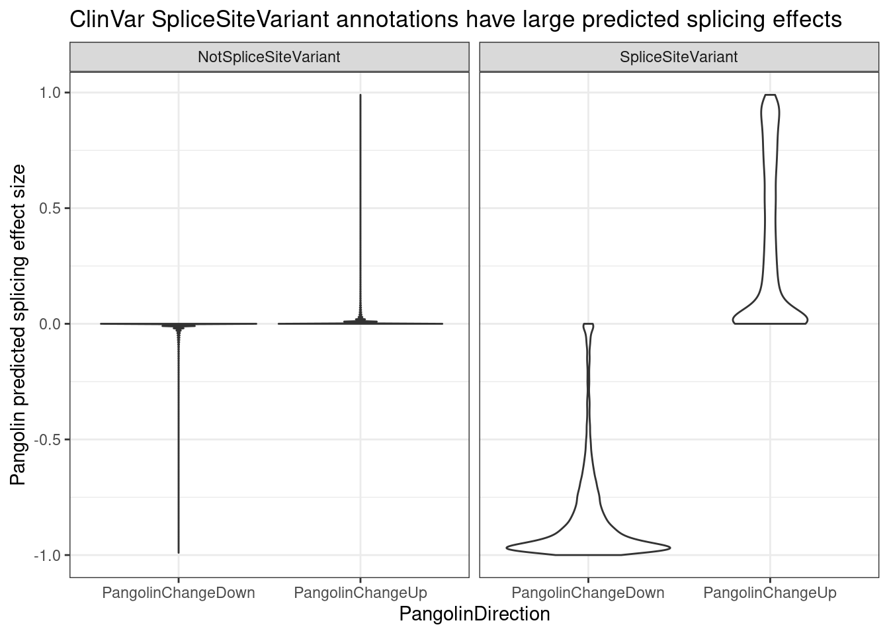
This is where I left off.
Let’s
TODO:
I downloaded the OMIM dataset, which is somewhat overlapping from entries in ClinVar, but I notice the OMIM tables occasionally have more information in the form of relevant keywords (like “autosomal recessive”) in the condition description. This might be more useful to prioritize the most promising candidates clinical targets. For example, for a condition that is inherited as autosomal dominant, it might be more feasible to treat by downregulateed the affected gene thru activation of cryptic splicing.
sessionInfo()R version 3.6.1 (2019-07-05)
Platform: x86_64-pc-linux-gnu (64-bit)
Running under: Scientific Linux 7.4 (Nitrogen)
Matrix products: default
BLAS/LAPACK: /software/openblas-0.2.19-el7-x86_64/lib/libopenblas_haswellp-r0.2.19.so
locale:
[1] LC_CTYPE=en_US.UTF-8 LC_NUMERIC=C
[3] LC_TIME=en_US.UTF-8 LC_COLLATE=en_US.UTF-8
[5] LC_MONETARY=en_US.UTF-8 LC_MESSAGES=en_US.UTF-8
[7] LC_PAPER=en_US.UTF-8 LC_NAME=C
[9] LC_ADDRESS=C LC_TELEPHONE=C
[11] LC_MEASUREMENT=en_US.UTF-8 LC_IDENTIFICATION=C
attached base packages:
[1] stats graphics grDevices utils datasets methods base
other attached packages:
[1] GGally_1.4.0 RColorBrewer_1.1-2 ggrepel_0.9.1
[4] edgeR_3.26.5 limma_3.40.6 gplots_3.0.1.1
[7] forcats_0.4.0 stringr_1.4.0 dplyr_0.8.3
[10] purrr_0.3.4 readr_1.3.1 tidyr_1.1.0
[13] tibble_2.1.3 ggplot2_3.3.3 tidyverse_1.3.0
loaded via a namespace (and not attached):
[1] httr_1.4.1 viridisLite_0.3.0 splines_3.6.1
[4] jsonlite_1.6 modelr_0.1.8 gtools_3.8.1
[7] assertthat_0.2.1 cellranger_1.1.0 yaml_2.2.0
[10] pillar_1.4.2 backports_1.1.4 lattice_0.20-38
[13] glue_1.3.1 digest_0.6.20 promises_1.0.1
[16] rvest_0.3.5 colorspace_1.4-1 Matrix_1.2-18
[19] htmltools_0.3.6 httpuv_1.5.1 plyr_1.8.4
[22] pkgconfig_2.0.2 broom_0.5.2 haven_2.3.1
[25] scales_1.1.0 gdata_2.18.0 later_0.8.0
[28] git2r_0.26.1 mgcv_1.8-28 generics_0.0.2
[31] farver_2.1.0 ellipsis_0.2.0.1 withr_2.4.1
[34] hexbin_1.27.3 cli_2.2.0 magrittr_1.5
[37] crayon_1.3.4 readxl_1.3.1 evaluate_0.14
[40] fs_1.3.1 fansi_0.4.0 nlme_3.1-140
[43] xml2_1.3.2 tools_3.6.1 hms_0.5.3
[46] lifecycle_0.1.0 munsell_0.5.0 reprex_0.3.0
[49] locfit_1.5-9.1 compiler_3.6.1 caTools_1.17.1.2
[52] rlang_0.4.10 grid_3.6.1 rstudioapi_0.10
[55] bitops_1.0-6 labeling_0.3 rmarkdown_1.13
[58] gtable_0.3.0 DBI_1.1.0 reshape_0.8.8
[61] R6_2.4.0 lubridate_1.7.4 knitr_1.23
[64] utf8_1.1.4 workflowr_1.6.2 rprojroot_2.0.2
[67] KernSmooth_2.23-15 stringi_1.4.3 Rcpp_1.0.5
[70] vctrs_0.3.1 dbplyr_1.4.2 tidyselect_1.1.0
[73] xfun_0.8